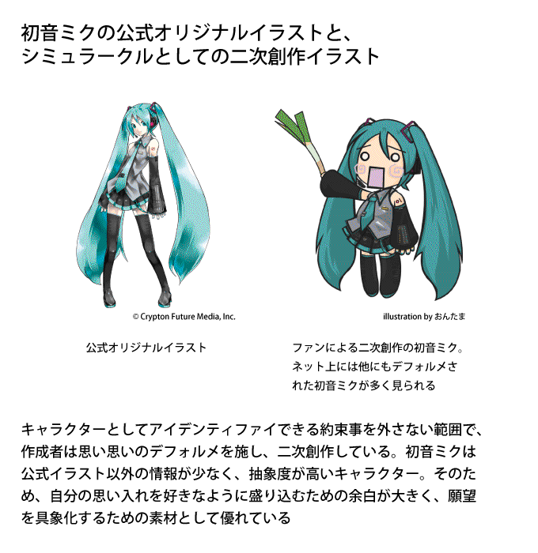

| 「いいね！」時代の繋がり―Webで心は充たせるか？― エレファントブックス新書 | |
| 熊代 亨 | |
| ElephantBooks (2013) | |
熊代 亨
Toru Kumashiro
インターネットは、どこまで人と人とを"繫いでいる"のでしょうか。
二〇一二年十二月、インターネットで知り合った友人の結婚式に出席してきました。会場には彼のネット仲間が何人も参列して、新郎新婦の門出を祝福したものです。私が結婚したときもネットで知り合った友人たちが来てくれましたし、高校時代の同級生にいたっては、オフ会で知り合った女性と結婚し、今では二児の父としてうまくやっています。こうした周囲の事例を思い出す限り、確かにインターネットは人を"繫いでいる"ように思えます。
その一方で、ネットコミュニケーションに夢中になっているけれども長続きする交際を持たない人、どれだけ繫がっても繫がりきらないような感覚を抱えている人も珍しくありません。ツイッターで大量のフォロワーに囲まれているにもかかわらず、「空虚だ」「寂しい」と孤独を嘆いているような人物を見たことはないでしょうか。そういう人物を見ていると、ネットコミュニケーションの頻度が高いからといって十分繫がっているとは限らない、ということを思い知らされます。
同じく、ネットが普及してからの十代～二十代は、ＳＮＳやメールを使ったコミュニケーションをかなりの頻度で繰り返していますが、あれでどこまで"繫がり"が促進されているのでしょうか。それとも"独りぼっち"に対する不安を紛らわせるための手段としてネットを用いているのでしょうか。もし、一日に何遍もメールを交わさなければ"繫がっていない"としたら、それで本当に人と人とが繫がっていると言えるのか――そういう疑問を禁じ得ないのです。
このように、ひとことでネットコミュニケーションと言っても、"繫がり"の内実はさまざまです。承認欲求や自己愛を充たすための刹那的なやりとりに終始している人と、生涯の人間関係を模索している人では、十年後、二十年後の人間関係は天と地ほどにも違うでしょう。また、ネットコミュニケーションを介して技能や知識にますます磨きをかけていく人もいれば、その場限りの満足を追い求めるうちに時間や金銭を失い、視野を偏らせ、後には何も残らないような人もいます。インターネットは素晴らしい文明の利器ですが、誰もがうまく使いこなしているわけではありません。
誰もが"繫がっている"ように見えて、どこまで"繫がっている"のか分からない――この本は、そんなインターネットの心理学的側面についての本です。
これまでにもインターネットについては多くのことが語られてきましたが、その多くは、ネットの技術的側面や、ビジネス・政治との関連をテーマとして取り扱ったものでした。インターネットと心理について書かれた数少ない書籍も、ＳＮＳはおろかブログすら普及していなかった時代に国外で書かれた、インターネットがアーリーアダプターの占有物だった時代のものが中心です。二〇一三年の、これまでＩＴとは無縁であったブルーカラー層や小中学生までもがインターネットに当然のようにアクセスする日本の現状には、相応にアップトゥデートな「インターネットと心理」についての論考があってもいいんじゃないか――そう思って、私はこの本を書いてみることにしました。
私は職業的には精神科医ですが、インターネットジャンキーと言って差し支えない、どんなときもネット上の人間観察がやめられないような、そういう人間です。インターネットを単なる情報ネットワーク以上の何かとして体感し、ネットコミュニケーションを観察し続けてきた一ユーザーとして、インターネットを介した人の繫がりについて考察していきたいと思います。
以下に、各章について簡単な紹介をしておきます。
まず第一章では、インターネット上で散見される、あまりうまいとは言えないネットユースの現状と、その心理的背景について紹介していきます。インターネットが普及しはじめて十数年が経ちますが、技術の進化に人間の側がついていけないらしく、ネット上では心理的充足を求めすぎて痛手を負う人や、誤情報に飛びついてしまう人たちが後を絶ちません。
情報 ツールとして以上に情動 ツールとして用いられがちなインターネットの現状について振り返ってみます。
続く第二章では、コフートの自己心理学における「自己愛」という概念を紹介したうえで、その自己愛をインターネット上で充たす際の特徴について解説します。昔から人間は、誰かとの繫がりや一体感によって自己愛を充たし、それをモチベーションや安心感の糧にして生きてきました。そうした繫がりや一体感がオンラインで成立するようになったことで、新たにどういうことが問題になり得るのか、チェックしてみます。
第三章では、ネットコミュニケーションについてまわる情報の抽象化について紹介します。ＳＮＳの短文やアイコンに象徴されるように、私たちはお互いに情報量のスカスカなアカウントを介して一体感や繫がりを体感していますが、それは本当にコミュニケーションと呼べるものでしょうか？ それとも、お互いのアカウントを"キャラ萌え"的に消費しているだけなのでしょうか？ ロボットアカウントが繫がりの対象とされている現象にも触れながらディスカッションします。
以上を踏まえ、第四章からは、ネットを介した自己愛充当の望ましい姿について考察していきます。多忙なスケジュールに分断されがちな現代人にとって、ネットは有用な繫がりの手段には違いなく、現実 の人間関係を補強するツールとしても新しい繫がりを求めるツールとしても無視できません。心理学的ツールとしてのインターネットを、リスクを回避しながらどう使っていくのか、ネットユースごとに場合分けしながら考えていきます。
最後の第五章では、ネット上で自己愛を充たしながら人間は成熟可能なのか・もし成熟可能だとしたらどういう道筋があり得るのか、コフートの自己心理学を応用して考えていきます。ネットコミュニケーションは、使い方次第では人の心を退行させてしまいますが、使い方次第では成熟に寄与する可能性も秘めているのではないか――そのあたりについて、年少者のネットユースを念頭に置きながらまとめます。
インターネットが普及しはじめて十数年が経ちました。人間の心理、とりわけネットを始める前に大人になった人たちの心理は、それほど大きく変化していないようにみえます。私は一九七五年生まれですが、私と同世代～年長世代の過半数は、インターネットが登場する前と心理的にほとんど変わりません。もう少し若い世代でも、インターネットに濃厚接触していない人たちと話をするぶんには、心理的に特別な隔たりがあるとは感じません。
しかし、ネットのアーリーアダプターやネット依存を呈している人たち、生まれながらにネットに慣れ親しんでいる人たちにおいては、この限りではありません。情報源としてGoogleやWikipediaを当然のように利用し、心理的充足感の多くを(ＳＮＳ、電子メール、LINEなども含めた)オンライン経由に頼るようになった人たちは、そうでない人たちよりずっと大きな影響をインターネットから受けずにいられません。ガラケーやスマートフォンが普及した現代のインターネットは、インターネット黎明期よりもずっと高速で、ずっとリアルタイムで、なにより"肌身離さずインターネットにアクセス"できます。常時接続は、もう研究者やギークだけの特権ではないのです。
GoogleやＳＮＳを常用するネットライフは、人間にどういう影響を与えるのか？――著述家のニコラス・Ｇ・カーは、『ネット・バカ』(青土社・二〇一〇年刊)のなかで、「インターネットに慣れた人は、短時間に大量の情報をスキャンできるようになるかわりに、ひとつの物事を熟考するには不向きになっていくだろう」と警告しました。実際、ＳＮＳやＲＳＳのポップアップがひっきりなしに知らせを告げる生活に慣らされていくうちに、分厚い本をじっくり読んでいられなくなった人もいらっしゃるのではないでしょうか。私自身、本書の原稿を書きはじめた頃、ブログやＳＮＳへのリアクションを告げるポップアップに何度も注意を逸らされてしまったので、とうとうインターネットを切断して作業しなければなりませんでした。
『ネット・バカ』は、ネットと注意力・ネットと学習について書かれた本なので、インターネットが人間の心理に及ぼす影響についてはほとんど触れられていません。ですが"誰でも肌身離さずネットにアクセス"できるようになり、ネットがコミュニケーションの大きなウエイトを占めるようになった以上、注意力や学習面だけでなく、心理面でもネットの影響を受けていると想定すべきでしょう。こうした影響は、若ければ若いほど・ネットを介した心理的充足に親しんでいればいるほど大きいでしょうし、これから社会に出てくる世代においては、今まで以上に顕著になってくるはずです。そしてネット依存の人たちが象徴しているように、オンラインの心理的充足に特化しすぎると、オフラインの心理的充足の手助けにならないどころか時には妨げになるかもしれません。
もちろん私は、インターネットを介して心理的に満足してはいけない、と言いたいわけではありません。むしろこれからの時代、ネットを介した心理的充足や人間関係は不可避になっていくでしょう。
ただ、インターネットを介した心理的充足と、今までどおりの面と向かった人間関係を介した心理的充足との、微妙な違いを意識しながら使っていかないと面倒なことになるかもしれませんよ、という但し書きはあったほうが良いとも思うのです。
これから先、インターネットは私たちの暮らしに今まで以上に深く食い込んでくるでしょう。ネットまみれになった近未来、人間がどうネットに慣らされ、どういう心理的傾向を帯びていくのでしょう？ このテーマについて、もっと多くの人が真面目に考えていてもよさそうなものですが、日本の心理学者や精神科医は、その手の未来予想図について言及を避けているようにもみえます。 *1 だからこそネット原住民にしてヘビーユーザーでもあり、ついでに精神科医もやっている私が、現状から予測される未来予想図を描いてみようか、と思ったわけです。
第一章では、まず、そうしたインターネットを介した心理的充足がもたらすリスクについて、象徴的なケースを幾つか紹介していきます。
七年前、これからのインターネットの可能性を高らかに謳った一冊の本がベストセラーになりました。ＩＴコンサルタントの梅田望夫さんによる『ウェブ進化論』(ちくま新書・二〇〇六年刊)です。「ネットユーザーによる積極的活動を通して、インターネットはますます理想に近づいていくだろう」――そういう、夢の詰まった書籍だったと記憶しています。
ところが数年後、その同じ梅田さんが「ソーシャルブックマーク上のコメントにはバカなものが多すぎる」「日本のウェブは残念」とコメントし、ネットユーザーの耳目を集めました。当時のネットはツイッターやニコニコ動画といった二〇一〇年代を代表するようなサービスが流行り出すちょっと前の時期で、「集合知」というより「集合痴」といいたくなるような荒れ果てた風景が広がっていましたから、理想に燃えていた梅田さんが失望したのも分かるような気がします。
そして二〇一三年、ウェブは確かに進化しました。DropboxやEvernoteといった「一度使ったらやめられない」サービスが普及し、フェイスブックやGoogle+のようなＳＮＳが幅を利かせています。高性能化したスマートフォンがガラケーにとってかわり、LINEのようなアプリが急成長を遂げています。そういう意味では、梅田さんの"予言"は当たっていたのです。
ところが、その進化したウェブを使う私たち人間はというと、ほとんど進化していません。インターネットが普及してこれだけの時間が経っているにもかかわらず、いわゆる"ネット炎上"には事欠きません。東日本大震災の際にも、ツイッターは情報伝達装置としてだけでなくデマ拡散装置としても機能してしまいました。震災後のインターネットでは、原発問題や国際問題について考えの異なる者同士が誹謗中傷合戦を続けていますが、どうみても、梅田さんが理想とした「集合知」には程遠い状態です。
こうなった理由のひとつには、ベテランばかりで占められていたインターネットにリテラシーの乏しい新参者が大量流入したから、という面はあるかもしれません。しかしそのことも含めて、ウェブサービスの進化に人間側が追いつききれず、お上品ともお利口とも言い難い営みによって高速回線が占められているのも事実ではないでしょうか。
第一章では、そんな「残念な日本のインターネット」の風景を振り返り、ウェブが進化しても心が進化していない私たちが直面している問題を点検してみます。
インターネットが普及したお陰で、私たちは生活圏や勤め先に縛られることなく、見ず知らずの人ともコミュニケートできるようになりました。本人の意志や能力次第では、不特定多数から注目を集めるのも簡単になり、ＳＮＳでは「いいね！(フェイスブック)」「いいよ(ミクシィ)」「お気に入り(ツイッター)」といったメッセージが盛んに交換されています。
こうした「その気になれば不特定多数から注目を集めるのも簡単」というネットの性質は、芸能人にはおあつらえ向きだったのでしょう、知名度アップとファンサービスを兼ねた芸能人ブログ・芸能人アカウントがあちこちにつくられ、莫大なトラフィックを生み出してきました。
ところがそんな芸道のプロのなかにも、ブログやツイッターを使いこなしきれず、やめざるを得なくなってしまうケースを見かけます。ＰＲプランナーの中川淳一郎さんが書いた『ウェブはバカと暇人のもの』(光文社新書・二〇〇九年刊)によれば、こうした騒動は二〇〇九年時点でも見られたものですが、その後も芸能人のブログのコメント欄にクレームが殺到して炎上するような案件をたびたび見かけます。
芸能人といえば、人から視線を集めることを生業にしている、いわばメディアのプロです。そのプロでさえ、ちょっとした失言をきっかけに制御困難な炎上事案に発展してしまうのですから、インターネットで不特定多数から注目を集める行為には、相応のリスクが伴うのでしょう。
そしてインターネットで注目を集めようとした"素人"が大火傷を負ってしまうケースともなれば、もっとたくさん、日常的に発生し続けています。よくあるパターンを幾つか挙げてみると、
①ネットで犯罪自慢→大炎上
「ゲーム機を万引きして売ったら八千円だった」「ホームレスの顔面に生卵をぶつけた」といった犯罪自慢の書き込みをして、大変な目に遭う青少年を見かけます。こうした犯罪自慢は、昭和時代の武勇伝としてはいかにもありそうで、当人自身は「こんなワルいこともできる俺様」なるものにのぼせあがっているのかもしれません。しかしインターネットは不良の溜まり場ではありませんから犯罪自慢はすぐ炎上し、住所氏名や職業などをバラされた挙げ句、退学・退職の憂き目に遭ってしまいます。
②職場のプライバシー情報を暴露→大炎上
犯罪自慢にはあたらなくても、職場の迷惑になるような書き込みをして収拾がつかなくなってしまうケースも見かけます。二〇一一年、お忍びで来店した芸能人カップルの情報をアルバイトの女子大生がツイッターで漏らしてしまい、大炎上の挙げ句、雇用主が謝罪するという事件がありました。「芸能人ＩとＴがご来店･･････今夜は２人で泊まるらしいよ。お、これは･･････（どきどき笑）」と書き込んだ女子大生自身は、芸能人を間近で見て実際ドキドキしたのでしょうし、そのドキドキ感を仲間と共有したかったのかもしれません。ですがこれでは、雇用主も利用客もたまったものではありません。同じく、従業員がネット上に「キモい客ばかり」と書き込んで企業のコンプライアンス体質が問われるような事件も、ネット上では定期的に見かけます。
③ニコニコ生放送でストリップ
炎上は、書き込んだ当人にも大騒動だと分かるので、火傷が火傷としてすぐ認識されますが、危険に気付きにくい"低温やけど"のようなタイプもあります。例えばニコニコ生放送でストリップまがいの露出行為を繰り返し、男性視聴者のまなざしを集めて喜んでいる女性たちなどがそれにあたります。
まだ年端もいかない女性 *2 がネット上にストリップ的動画を投稿するのは、社会的にはかなりのリスクがあります。インターネットの常として、女性の肌も露わな動画はそこらじゅうにコピーされるでしょうし、ポルノサイトや出会い系サイトの広告として勝手に使われる可能性もあります。将来、仕事に就いたり家庭を持ったりしたとき、肌も露わな自画像がいつまでもネット上に流通し続けていたら"黒歴史" *3 どころの騒ぎではありません。
ところがニコニコ生放送では、そんなリスクなど知ったことかといわんばかりの女性と、もっと過激な動画を投稿するよう囃し立てるギャラリーとのやりとりが繰り広げられます。または、ネタ的に過激な(時には犯罪すれすれの)生放送をする若年者と、それを囃し立てるギャラリーという構図ができあがることもあります。
①②③いずれの場合も、インターネット越しに自分のことを見てもらいたい・シンパシーを集めたいという、そういう下心が透けて見えるようです。ネットで心理的充足を求めること自体がいけないわけではありませんが、追い求めすぎた挙げ句、人生を踏み外していく人々を目の当たりにしていると、ウェブの進化に人間がついていっていない・ウェブに人間が振り回されている、そういう印象を禁じ得ません。
どうして炎上案件が絶えないのでしょうか？
こうした事例を挙げると、「何千万人ものネットユーザーの、最も愚かな一握りの行動だけがピックアップされている」と指摘する人がいるかもしれません。ある面ではその通りでしょう。しかし、ああいった事例を「最も愚かな一握りのネットユーザーだけの愚行」と決めつけて構わないのでしょうか。
ここでちょっと、私の経験談を紹介してみます。数年前、私は泥酔状態の午前二時に「今度、オフ会やろうぜ！」とブログに投稿したことがありました。翌朝、自分のブログを見て愕然としました。覚えのない記事がアップロードされていて、複数の知人から返事がつきはじめていたのです。まずいことを書き込んだわけではなかったので大事にはいたらず、記事を削除し、知人に釈明するだけでことは済みましたが、もし、あの泥酔状態のなかで、患者さんの守秘義務を破るようなことを書いたり、プライベートな情報を漏らしたりしていたら......と思うと、ぞっとします。
日常生活が充実し、落ち着いた精神状態のときには、安全なネットライフを心がけるのはそれほど難しくありません。まあ、ほとんどの人は大丈夫でしょう。しかし、アルコールが入っている状況・非日常的な事態に出くわして舞い上がっている状況・寂しくて仕方ない状況では、案外、タガが緩んでしまうことがあり得るのではないでしょうか。スマートフォンが普及した今、やさぐれた気持ちのときも、失恋して焼酎を飲みまくっているときも、芸能人に会って舞い上がっているときも、いつでもどこでもネットに接続できてしまえるのですから。
だから、私やあなたがネットで炎上してしまうか否かを考える際には、自分のベストコンディションを前提条件とすべきではなく、最低最悪のコンディションを想定すべきです。ネットでの大火傷を、一部の極端な人たちの愚行とみなすのでなく、普通の人が最低最悪のコンディションのときにたまたま悪手を打ってしまったものと想定してみると、他人事と笑って済ませられる人は少ないはずです――少なくとも、優れない精神状態のときにネット通販で衝動買いをしてしまったことのある人や、怒りに任せて余計なことをネットに書いてしまいプチ炎上した経験のある人にとって、対岸の火事では済まされないものがあると思うのです。
ネットが普及する以前だったら、こうした炎上のきっかけになる発言は井戸端会議や居酒屋談義といった、オフラインの、身内だけの会話で済んでいました。芸能人のプライベートを話題にしようが"武勇伝語り"をしようが、たいていその場限りのもので、顔見知りの会話である以上、お互いの精神状態や事情を踏まえて酌量しやすかったと思います。
ところがネットの場合、耳目を集めそうな発言がいったんＷＷＷに放流されると、瞬く間に全世界に拡散して不特定多数に曝されることになります。しかも問題発言ほど派手に拡散しアーカイブされやすいため、一度の失言・一度の炎上が履歴となってついてまわります。「その場限りの身内の話題」のつもりでＳＮＳに書き込んだことでも、ネットはそうは思っちゃくれません。
インターネットが普及したことによって、私たちは「他人に注目されたい」「いいね！と言ってもらいたい」といった心理的欲求を、遠く離れた者同士でも・いつでもどこでも充たせるようになりました。そのかわりネット上では、昔だったらその場限りの過ちで済んでいた言動や情状酌量の余地のあった言動がパブリックなものとして取り扱われ、容赦なくアーカイブ化されていきます。こうしたネットの特性に十分注意を払っていない人や、注意はしていてもコントロールが甘い人には、ネットユースはかなりの危険を伴います。たとえ今は炎上していなくても、これから先、ネットコミュニケーションを続ける限り、ネットで"やらかして"仕事や人生や人間関係を喪失するリスクが付きまとうのです。
また、全く違ったタイプの落とし穴にはまり込むネットユーザーもいます。オンラインゲームやソーシャルゲームに時間やお金を費やしてしまう、ネットスラングでいう「廃人」の類です。
オンラインゲーム、つまりインターネット回線を使って複数のユーザーが同時に遊ぶタイプのゲームは九〇年代後半からありましたが、ユーザー数が普及段階に入ったのは二〇〇〇年代に入ってからです。『ラグナロクオンライン』『ファイナルファンタジーⅪ』といったオンラインゲームが数十万人のユーザーを擁するようになり、若者の「オンラインゲーム依存」がマスメディアを賑わせるようになりました。
オンラインゲームは、キャラクターを成長させて冒険をする点では、『ドラゴンクエスト』のような過去のゲームに似ているようにも見えます。しかし複数のプレイヤーが同じサーバーでゲームを遊ぶ性質ゆえに、プレイ感覚は今までのゲームとはだいぶ異なり、次のような特徴を備えるものでした。
あらゆる活動が、複数のプレイヤー同士が関わって進行していく
オンラインゲームは冒険や戦闘だけでなく、金銭やアイテムの流通も含めたあらゆる場面でプレイヤー同士が分業的に関わりあってゲーム内社会が成立するシステムになっています。このため、ゲームが疑似社会のような性質を帯びていて、ゲーム内の人脈やステータスが独特のリアリティをもって体感されます。従来のゲームでは、どれだけキャラクターを育てようがゴールドを稼ごうが「一人上手」にしかなりませんでしたが、オンラインゲームでは「他のプレイヤーに羨ましがられる」「凄いと言ってもらえる」可能性があるのです。そこまでいかなくても、ゲーム内コミュニティで必要な人物とみなされたり、いっぱし扱いされたりする機会はかなりあります。「コンピュータではない他人から認めてもらえる」――リアルな人間関係を介してしか充たせなかった心理的欲求をゲームのなかでも充たせる点が、オンラインゲームが従来型ゲームと一線を画しているところでした。
キャラクターの成長に膨大な時間がかかる
オンラインゲームのキャラクターは、なかなか成長しません。従来のロールプレイングゲームは数十時間もあれば十分強力なキャラクターができあがりました。ところがオンラインゲームの場合、数十時間程度ではレベルは上がらず、数百～数千時間かけなければにっちもさっちもいきません。他のプレイヤーが羨むような強さを手に入れたい人は、それに見合った時間をかけなければなりません。
"エンディング"がない
これまでのゲームには"エンディング"が用意されていましたが、オンラインゲームには"終わり"がありません。大商人を目指すのも世界一の海賊を目指すのもプレイヤーの自由です。ところが自分がログインしていないときも他のプレイヤーはログインして成長し続けていますから、ある時点でトップを占めてもしばらくログインしていなければすぐ追いつかれます。このため、ゲーム世界内で自己顕示欲を充たせるステータスを手に入れたプレイヤーは、維持したければゲームをプレイし続けなければなりません。
こうした要素が重なり合っているので、いったんオンラインゲームで自己顕示欲を充たしてしまった人は、ゲームのやめどころを見つけられずダラダラ続けてしまいやすい傾向にあります。特に、日常生活のなかでは自己顕示欲もいっぱし扱いも得られないような人にとって、オンラインゲームは「他人に認めてもらえる唯一の空間」になり得ます。しかし、そのバーチャル空間での心理的充足に夢中になりすぎてしまうと、何百時間、何千時間とディスプレイに束縛されてしまうのです――たとえ一度きりの思春期であったとしても、です。
このように、オンラインゲームは「プレイしはじめたプレイヤーを長時間拘束」しがちで、少なからぬ「廃人」と「廃人予備軍」を生み出しました。その一方で、何年もプレイし続けた常連プレイヤーがのさばり、何千時間も費やさなければならないと周知されたオンラインゲームは、新たなプレイヤー層の開拓がだんだん困難になっていきました。そこでオンラインゲーム各社は"有料で購入でき、特別な効果を持ったアイテム"――いわゆる"課金アイテム"――をプレイヤーに販売することで客単価を上昇させようと試み、ある程度成功しました。結果、オンラインゲームは現在もジャンルとして生き残っています。
そして近年は、もっと短時間でプレイ可能な、携帯電話やスマートフォンからもアクセスできる「オンラインゲームを簡単にしたようなもの」が登場し、ゲーム市場を席巻しています。ソーシャルゲームです。
三か月で三〇〇万人以上が登録した『サンシャイン牧場』(Rekoo Japan・二〇〇九年リリース)をはじめ、まず無料でユーザーを獲得し、ヘビーユーザーに"課金アイテム"を売りさばいて収益を確保するソーシャルゲームは急速に市場規模を拡大していきました。矢野経済研究所によれば、二〇一三年度のソーシャルゲーム市場は四二五六億円と予測されています。
ソーシャルゲームはオンラインゲームに似ているところもありますが、幾つかの点で大きく異なっています。
高性能パソコンや専用ゲーム機がいらない
二〇一〇年以前にヒットしたオンラインゲーム、特にゲーム性を重視したオンラインゲームは、スペックの高いパソコンや専用ゲーム機を必要としました。いざ遊びたいと思っても、高性能なパソコンやゲーム機を持っていない人は遊べなかったのです。対して、ソーシャルゲームはスマートフォンやガラケーといった誰もが保有している生活インフラで遊べるので、潜在的ユーザーの数が段違いです。
ゲームそのものが難しくない
ソーシャルゲームは、ゲームとしてはそれほど難しくありません。動体視力も反射神経もいりません。これまでのオンラインゲームにありがちだった、他のプレイヤーとのチームワークや人間関係のメンテナンスといった"しがらみ"も少なく済ませられます。これまでゲームに触ったことのない人でも比較的簡単に遊べるというのは、ソーシャルゲームが裾野を広げていくうえで大きな長所でした。
肌身離さず、いつでもどこでもアクセスできてしまう
据え置き型のパソコンや家庭用ゲーム機と違って、スマートフォンやガラケーはいつでもどこでもアクセス可能です。ということは、出張中や旅行中にもソーシャルゲームが遊べるということですし、パジャマ姿で布団に寝転がっているときも、泥酔寸前の終電のなかでも、"課金アイテム"を購入するか否かの判断を顧客に迫れる、ということでもあります。この、「いつでもどこでもソーシャルゲームにアクセスできる＝プレイヤーの判断力が鈍っているときにも課金の判断を迫れる」という利点は、大昔の食玩シール集めにも、従来型のオンラインゲームにも、パチンコや公営ギャンブルといった潜在的な競争相手にもない、ソーシャルゲームだけのアドバンテージでした。
「時間を出すよりカネを出せ」
従来型のオンラインゲームでは、自己顕示欲を充たせるか否かを左右する最大の要素は、プレイ時間の長さでした。莫大な時間をゲームに捧げていることが"エリート"の必要条件だったのです。対してソーシャルゲームで自己顕示欲を充たせるか否かを左右する最大の要素は、課金した金額になりました。「時間を出すよりカネを出せ」――経済原理をゲームの世界に持ち込んだのがソーシャルゲームの身も蓋もない、しかし画期的な点でした。課金アイテムの獲得にクジ的要素を盛り込んだことで、プレイヤーの射幸心を煽ることにも成功しています。
人間に与えられた時間は有限ですし、そもそも時間ばかり費やしてカネを費やさないプレイヤーの客単価なんてたかが知れています。ところがソーシャルゲームの場合、自己顕示欲やいっぱし感を充たせるか否かの第一の関数がカネで、しかも一日に何万円でも課金できてしまいますから、そういうカネ払いの良いプレイヤーにこそ心理的充足をプレゼントできます。世の中には、気持ち良くお金を払わせてくれる娯楽には案外寛大な人がいたりしますから、そのような人たちを煽り、短時間に大量のカネを巻き上げるゲームデザイン・ランキングシステムが成功したのです。
これらのアドバンテージを後押しするように、最大手のGREEやモバゲーはテレビ広告を繰り返し、ゲームにもインターネットにも今まで無縁だった客層をも積極的に取り込みました。しかし、これまでの「ネトゲ廃人」が際限なく時間を費やしたのに対し、「ソシャゲ廃人」は際限なくカネを費やすわけですから、ソーシャルゲームはたちまち社会問題化しました。国民生活センターによれば、ソーシャルゲームを含めたオンラインゲーム全体の相談件数 *4 は二〇〇九年度には一四三七件でしたが、二〇一一年には三一七四件にまで増加しており、そのなかには、未成年者が親のクレジットカードを使い込む相談が少なくないといいます。
二〇一二年五月、消費者庁はソーシャルゲームの「コンプリートガチャ」という射幸心を煽るゲームシステムの違法性を指摘し、ソーシャルゲーム企業に注意を喚起しました。これを機に「コンプリートガチャ」というシステム自体は一掃されましたが、自己顕示欲がカネ払いに直結したソーシャルゲームの本質は現在も変わっていません。二〇一三年現在、GREEやモバゲーといったソーシャルゲーム企業は今も左うちわです。
インターネットの地獄巡りはこれぐらいにしておきましょう。
黎明期のインターネットは、コンピュータやネットブラウザについての知識がなければ閲覧もままならず、ＨＴＭＬの知識がなければ意思表示できないものでした。その敷居の高さがユーザーのフィルタリングになっていましたし、ユーザーの絶対数が少なく情報の伝播速度がゆっくりしていたお陰で、今だったら一瞬で炎上して社会生命を喪失してしまうような、空恐ろしい書き込みが何ヶ月もアップロードされたままになっているような、のんきな空間でもありました。
ところが今や、なんの前知識もない人間までもがスマートフォンやガラケーを保有し、ツイッターやGmailのアカウントを家電量販店が千円で開設してくれるような時代です。そして現代のインターネットは持ち運び自由でリアルタイムですから、炎上するような書き込みにせよ、ソーシャルゲームのランキングにせよ、すべてがせっかちに進行していきます。一瞬の気の迷い・焦りが即座に結果になってフィードバックされてくるという点では、九〇年代のインターネットよりも難易度の高いインターネットになったとも言えます。にもかかわらず、その「炎上しやすく」「煽られやすい」インターネットに、猫も杓子もアクセスしているのです。
こうした近年のインターネットの状況を、『ウェブはバカと暇人のもの』のなかでＰＲプランナーの中川淳一郎さんは辛辣に批判しています。曰く、
「バカ」「死ね」「アホ」「この低脳」という言葉が飛び交い、有名人や"リア充"の揚げ足を取って炎上を楽しむような、しようもない人たちの空間。
凡庸な人が凡庸なネタを外に吐き出しまくるせいで本当に良いものが見えにくくなり、バカが発言ツールを手に入れて大暴れしたり、犯罪予告をするようなリスクのある空間。
『ウェブはバカと暇人のもの』（光文社新書・二〇〇九年刊）Ｐ31 -32 より抜粋
"便所の落書き"とも評される２ちゃんねるだけでなく、ブログやツイッターにさえ、感情の先走った誹謗中傷を頻繁に目にすることを思うにつけても、こうした批判は的外れでもないでしょう。
"バカと暇人のインターネット"も、まあ、ミクロな個人単位の誤謬で済むなら、それはそれで自己責任の問題だと言えなくもありません。しかし、判断力にもネットリテラシーにも恵まれない人間が情報インフラとしてのインターネットを席巻してしまうと、マクロな集団レベルでも困った事態に陥ることがあります。それが如実に表れていたのが、二〇一一年三月、東日本大震災の翌日以降のツイッターです。
人間は、欲望や不安に衝き動かされて行動する生き物ですから、ツイッターで何かに言及する際に、その背景にある不安や欲望が反映されること自体は不思議ではありません。それが良い具合に働けば、誰かを助けるための正確な情報を提供したり、具体的なチャリティを促進したりすることもあるでしょう。実際、三月十一日時点では、おおむね冷静で効果的なツイートが大勢を占めていたように記憶しています。
ところが一夜明け、東北地方の惨状が報道され、福島第一原発が危ないらしいことが明るみになった頃から、不安や怒りに彩られた、語気の荒いツイートをする人が目立ちはじめました。マスメディアの発表や被災者からの最新情報といった、情報価値の高いツイートをかき消すように、根も葉もない憶測やデマも飛び交うようになり、ツイッターは感情の坩堝 と化してしまいました。メディア論や地質学に詳しい学者さん、日本のインターネットに最も精通しているとおぼしき人たちまで、デマに惑わされたり、くだらない中傷合戦に首を突っ込んで時間を無駄遣いしたりしていたのを思い出すにつけても、あの時期のツイッターには、人間を愚かにする魔物が棲んでいたかのようでした。
この一件が示したのは、「ツイッターは、ユーザーの心理的欲求やコンディションに大きく左右されやすいツール」ということであり、「情報伝達ツールとして以上に個人の心理的欲求を充たし不安を防衛するためのツール」として用いられることでした。ツイッターは"情報ツール"である前に"情動ツール"であり、たくさんの人が不安に駆られ安心欲求に飢えている状況下では、個々人のタイムラインのみならず、その言語圏のツイッター全体が安全欲求に飢えた感情の坩堝 と化してしまうのです。
今後、いくらネットが進化しようとも、こうしたエモーショナルな現象は私たちが人間である限りネットコミュニティに付きまとうことでしょう。何らかの歯止めなり対策なりがない限り、個人のミクロな心理的要請が積み重なって全体の気分を染め上げていくような現象は起こり続けるはずです。
このように、インターネットと人間の心理的欲求はきわめて密接に結びついていて、問題のすべてではないにせよ中核の部分は、ユーザーの心理的な次元に基づいているようにみえます。インターネットという高度なテクノロジーの産物が、旧態依然とした人間の心理に振り回され、挙げ句の果てに「バカと暇人のもの」になっていったのは皮肉な話ですが、ネットユーザーの大多数がフェイスブックやツイッターといったツールをまず心理的充足の手段として用いている以上、インターネットは情報ネットワークである以上に情動ネットワークと呼んだほうがお似合いでしょう。是非はさておき、普通の人たちがインターネットを介して摂取しているのは、安全よりも安心、考察よりも「いいね！」、頭が良くなるような読み物よりも気分が良くなるような読み物なのですから。
Web2.0論をはじめとするギークたちの理想論は、「テクノロジーを見て人を見ず」といいますか、人間がプリミティブな心理的欲求に突き動かされているという大前提を見逃していました。そういう、ドロっとしてままならない人間から目を背けたくて潔癖な未来を夢想したのか、はしたなくて愚かなインターネットの世界を知らずに育ったお坊ちゃまだったのか......どちらにしても、Web2.0論なるものが、テクノロジーの冷静さと自分自身とを同一視するのに最適なコンテンツだったことは確かです。Web2.0論を称揚した人々の心性も、案外、一般的なネットユーザーにありがちな「見たいものしか見たくない」心性と五十歩百歩だったのかもしれません。
どうあれ、インターネットを介した心理的充足や、ネットコミュニケーションを介した人と人との繫がりはますます一般的になっていくでしょう。デジタルネイティブな世代にとって、オンライン空間はもはや生活の一部ですし、バーチャルリアリティというより現実 の一部ですらあります。本章のなかで私は、ネットと人間心理との関わりのなかでも不幸な巡り合わせばかり紹介してきましたが、その一方で、然るべき使い方をするぶんには社会的に有用な形で心理的欲求を充たしあえるということ、そうした実践を積み重ねている人がいることも忘れるわけにはいきません。大震災初日の助け合うツイッターの風景にしても、インターネットを介した親友関係にしても、そこには間違いなくネットと人間心理との好循環があったはずですし、ＳＮＳやLINEを駆使して、既存の人間関係を強化したり伴侶を見つけたりしている人もまた存在するのです。
ですから「日本のインターネットは残念になった」「ネットはバカと暇人のもの」と失望するのでなく、人間の心理的欲求の性質とインターネットの性質の両方を踏まえたうえで、これからのネットコミュニケーションのあるべき姿を模索し、実践していく必要があるのだろうと、私は思います。なるほど、私も含めた大半のネットユーザーはバカで暇人で残念な人間なのかもしれません。それでも、そんな私たちなりにインターネットと付き合っていかなければなりませんし、願わくは、情報面でも情動面でも満ち足りて、平穏なネットライフを過ごしたいのですから。
続く第二章では、インターネットを介して心理的に充たされるとはどういうことなのか、従来のコミュニケーションと何がどう違うのかについて、「自己愛」をキーワードに明らかにしていきたいと思います。
第一章では、インターネットに心理的充足を求めた挙げ句、振り回されている人たちについて紹介してきました。現行のネットユースを理解するにあたっては、ギーク然とした技術面に着眼するだけでなく、もっとプリミティブな人間心理にも着眼しなければ埒があかなさそうです。
そこで第二章では、人間の心理的充足、特に【認められたい・いっぱし扱いされたい・一人でいたくない】といったソーシャルな欲求をネットで充たす際の注意点について、自己愛という概念を使って紹介します。オンラインでもオフラインでも、人と人とが繫がりたい欲求自体には大きな違いはありません。けれどもネット上での人間同士の繫がり方は、オフラインの人間同士の繫がりとはだいぶ違っていますから、欲求の充たされ方も求め方も自ずと違ってくるものです。そのあたりについて、まず自己愛の概念を知っていただいたうえで、ネットコミュニケーション固有の問題に触れていきます。
本章のメインテーマに入る前に、ここでひとつ確認しておきたいことがあります。それは「心理的な欲求は、いっぺんにたくさん充たしても貯蓄がきかない」ということです。
日頃、私たちは人と人とのコミュニケーションを介して繫がりを体感したり、自分は孤独ではないと確認したり、承認欲求 *5 を充たしたりします。そうした欲求は、挨拶のような日常的な身振りのなかで充たされることもあれば、学力テストの結果や会社の業績発表のような場面で充たされることもあります。
こうしたソーシャルで心理的な欲求は食欲や睡眠欲にどこか似ています。人はおなかが空いてくると何か食べたいと思うものですが、食べられるキャパシティには限界があります。ある程度なら"食いだめ"もできますし、たくさん食べ続けていれば皮下脂肪がついて飢えに強くなるかもしれません。それでも一時に"食いだめ"できるキャパシティには限度があって、まさか一ヶ月分まとめて食べるなんて不可能です。睡眠にしても、一週間分まとめては眠れません。
同じように、心理的欲求も"貯蓄"がききません。例えばある日、インターネットやテレビで"時の人"になり、普通の人の一生分ぐらい承認欲求をかき集めたとしましょう。けれども満足していられるのは、せいぜい一週間かそこらではないでしょうか。何千人～何万人から褒められたり注目されたりする機会は、たとえるなら何万人分もの料理を一度に提供されるようなもので、結局は食べきれないし保存もききません。
それだけでなく、この手の心理的欲求を"暴飲暴食"するのはあまり良くないかもしれません。一汁一菜にたとえられるような普通の心理的充足に比べると、"時の人"になるような心理的充足のほうが刺激が強いのは確かです。しかし、そういう派手な心理的充足ばかり追いかけるのは、「高級食材を使ったグルメばかり追いかけてメタボ一直線」みたいなもので、心のダイエットができないというか、桁違いな心理的充足を与えられないと満足できないような、非効率な心になってしまいます。たくさん与えられないと満足できないということは、幸福感を得るためのハードルが高くなるということです。"燃費の悪い心"を身につけるも同然です。 *6
ビジネス書でよく引用されるアブラハム・マズローの欲求段階説によれば、人間は、生理的欲求や安全欲求が充たされ、所属欲求や承認欲求も充たされるようになったら、より高位な自己実現を目指すようになる、といいます。ところが第一章で紹介したように、ネット越しにたっぷり承認欲求を充たしても高位な自己実現にはたどり着かず、"燃費の悪い心"を持て余したまま同じサービスをウロウロしているネットユーザーばかり......というのが実情ではないでしょうか。
そうでなくても、心理的欲求は貯めがきかず、食事のように補い続けなければならないわけですから、「ひとつの欲求が充たされれば次の欲求に移行できる」というアイデアはちょっと使いにくいと思います。
そこで本書では、マズローの欲求段階説には頼らず、コフートという精神科医の「自己愛」という概念を軸にして、人間の心理的欲求とインターネットとの関係について議論していきます。
皆さんは「ナルシスト」「自己愛」といった言葉から、どんなイメージを連想するでしょうか。あまりお近づきになりたくないような、ネガティブな印象を抱く人が多いのではないかと思います。実際、「自己愛」の辞書的な意味を確かめてみると、
自己愛(ナルシシズム narcissism)とは、（１）自分の容姿に陶酔し、自分自身を性愛の対象にしようとする傾向。ギリシア神話のナルキッソスにちなむ精神分析用語。（２）うぬぼれ。自己陶酔。
（『大辞林』 三省堂刊)
とありますが、これは「自己愛」という言葉の世間的イメージとほとんど違わないものだと思います。
しかし、心理学の世界、とりわけ人間の自己愛を専門的に研究したコフートという精神科医の定義では、自己愛はもっと幅広く誰にでもあるもので、それ自体は不健康でも病的でもありません。
例えば、寂しいときに家族や友人に電話をしたくなって、実際に連絡してみたら心理的に救われたと感じたことはないでしょうか。あるいは、スポーツの日本代表選手の活躍を観戦しているうちに、まるで自分自身のことのように喜び、勇気を分けてもらったように感じたことはないでしょうか。
こうした、人と人との繫がりに救われたり、力強い誰かとの一体感に勇気づけられたりする感覚も、コフートに言わせれば「自己愛を充たしている」に含まれます。もちろんこれは一部の病的ナルシストだけのものではなく、誰でも感じるものです。他人からのまなざしや是認を求める欲求もひっくるめて、「誰かとの繫がりや一体感を求める欲求全般を、自己愛と呼ぶ」 とまとめて差し支えないと思います。
さきほどから名前を挙げているコフート(Heinz Kohut, 1913 - 1981)という精神科医は、もともと自己愛パーソナリティ障害という、ハイレベルに自己愛を充たせなければ満足できない性格の治療法を研究していました。この、病的自己愛のプロフェッショナルが晩年にたどり着いたのは、「自己愛は誰にでもあるが、年齢相応に成熟していくのが望ましい」という考えでした。精神分析の祖・フロイトは、自己愛は大人になったら克服すべきと考えていたようですが、コフートは「自己愛は克服するもの」ではなく「自己愛は成熟するもの」と考えました。
実際、人間が人間である限り、「誰かとの一体感や繫がり」を求める気持ちを捨てるのは不可能に近いようにみえます。仏教の世界では"悟りの境地に到るには、愛する者への執着を捨てなければならない"と説くそうですが、悟りの境地に到る人がほとんどいないことが暗に示しているように、誰かの傍にいたい・誰かと繫がりを感じていたいという欲求は、おいそれとは捨てられそうにありません。
もちろん「一体感や繫がり」を求める度合いは大人と子どもでは大きく違っていますし、世間で求めて構わない度合いは時代や文化によっても異なります。しかし子どもには子ども相応の、大人も大人相応の水準で「一体感や繫がり」が必要で、それが欠けている人はじきに心理的に参ってしまうのではないか、とコフートは考えました。この考え方は、孤独がメンタルヘルス上のリスクファクターである知見とも矛盾していません。
注意しなければならないのは、自己愛の充たし方、つまり「一体感や繫がり」を求める様式は、時代によって移り変わっている、ということです。
例えば昭和以前の日本では、自己愛の充たし方は「集団との一体感や繫がり」に頼るのが主流でした。地域共同体や大家族といった社会集団に所属し、仕事や行事を皆でこなしながら自己愛を充たしあう風景が全国あちこちで見られました。戦後間もなく田舎から首都圏に出てきた男女にも、かつての共産党 *7 ・新宗教・企業などが共同体的な受け皿として積極的に機能し、集団的な繫がりや一体感を支えてきました。ただし、こうした集団的な自己愛の充たし方は、ともすれば一体感や繫がりが強くなりすぎて、その過剰な拘束性がストレスとなって個人を蝕むリスクを孕んでいましたから、現代に比べて良いことづくめだったわけではありません。
対して、平成以後の日本では「個人レベルで称賛やまなざしをかき集めて自己愛を充たす」様式が主流になっていきました。「他人の目を惹くようなガジェット」「ライバルよりも一歩先の流行」を追いかける人が増加し、バブル景気が起こると日本人は世界じゅうから奢 侈 品 を買い集めるようになりました。バブルが弾け、高級ブランドが若者の手に届かなくなってからは、そうした競争の舞台はサブカルチャー領域へと移りましたが、ひとり一人が個人単位で自己愛を充たす構図そのものは二一世紀に入っても変わってはいません。
自己愛充当が個人の自由に委ねられるようになった＝誰かに褒められたり認められたりするか否か・友達や恋人ができるか否かが自分次第、いわば"自己責任"な時代になった、ということでもあります。
この、昭和以前の自己愛の充たし方と、平成以後の自己愛の充たし方とを並べてみると、さきほどの辞書的な定義に近いのは後者です。だから年配の人が若者を批判する際に「現代の若者は自己中心的だ」と表現したがるのも無理のないことだと思います。ですが実際には、社会が変化したことで自己愛充当のトレンドが個人化・自己責任化しただけで、昭和以前の人間も「集団との一体感や繫がり」を介してどっぷり自己愛を充たしていた点には留意が必要です。
昭和以前の精神史においては、【イエや地域の一体感や繫がりが過剰で、そこから離れたい・拘束感を緩めたい】が大きなテーマだったのに対し、平成以降は【一体感や繫がりが過小ななかで、どうやってそれを獲得していくのか】が大きなテーマになってきている――という風に私は理解しています。 *8
一体感や繫がりを体感できるような対象、つまり自己愛を充たしてくれるような対象のことを、コフートの心理学(自己心理学)では【自己対象】と呼びます。例えばスポーツ選手とサポーター、ライブハウスの客席と演奏者などが一体感を感じているようなときには、お互いに自己愛を充たしあっている・お互いを自己対象として体験しあっている、ということになります。
この自己対象の体験様式について、コフートは大きく分けて三種類のバリエーションに分類しました。
①鏡映自己対象 mirroring selfobject
ひとつめの自己対象は、まなざし・称賛・反応を与えてくれ、"満更ではない自分自身を映し出す鏡"として体感されるような人(やモノ)です。こうした体感を与えてくれる具体例としては
・赤ちゃんだった頃、喜ばしげにまなざしてくれた母親
・運動会や発表会で頑張っているときの声援、称賛、拍手など
・いっぱしの仲間として認めてくれる友人グループのメンバー
・キャバクラに通い詰めている男性を、チヤホヤしているホステス
などが該当します。いずれの場合も、鏡映自己対象に相当する人物が自分を見てくれている・認めてくれていると体験されている限り、「ああ、私は一人じゃないんだな、満更じゃないんだな」といった満足感や安心感が得られ、孤独なときより心強く感じられるものです。本番に強いタイプのなかには、声援や称賛を集めると気分が高揚してきて、普段以上の力を発揮できるタイプの人物もいます。
もちろん、誰もが鏡映自己対象を介して自己愛を充たすのが得意なわけではありません。褒められると照れたり緊張したり、かえってうまくいかなくなる人もいますし、逆に、認められるなら徹底的に・ありのままの自分を肯定されるぐらいの勢いでなければ満足できないような、これはこれで褒められるのが不得手な人も世の中にはいます。
いずれにせよ、鏡映自己対象を介して自己愛を充たすという営み自体は世界共通なものらしく、日常の挨拶や軍隊の敬礼のように、お互いを略式で認めあってマイルドな形で自己愛を充たしあう習慣はどこの社会や共同体にも定着しています。人と人とが鏡映自己対象としてお互いを体験しあう行為は、人間関係の潤滑油としても重要です。
ただし、ここで留意していただきたいのは「自己対象として体験されるか否かは、相手人物の実際の思惑とイコールとは限らない」点です。四番目の例に挙げたホステスなどがそうですが、キャバクラに通っている男性自身がホステスを鏡映自己対象として体験しているからといって、ホステスが本気で男性をリスペクトしているとは限らないわけです。ホステス自身は店の勝手口で煙草を吸いながら「あいつに相槌を打つのはうんざりだ」とつぶやいているかもしれません。
厳密な定義上、実は、自己対象とは「対象人物そのもの」を指す言葉ではなく「体感されている相手のイメージのほう」を指す言葉なので、時に、誤解や勘違いに基づいて相手のことを鏡映自己対象と思い込むパターンもあり得ます。そして前述のホステスのように、自分のことを鏡映自己対象として錯覚させるテクニックに長けた人が世の中には案外いたりします。
②理想化自己対象 idealizing selfobject
ふたつめの自己対象は、理想の先輩に憧れたり師匠を頼りにしたりすることで自己愛が充たされるタイプです。一般的なイメージでは、自己愛だのナルシストだのといえば他人の称賛・まなざし・チヤホヤが必要不可欠のように思われがちですが、正反対に、誰かに称賛や憧れのまなざしを投げかけているときにも自己愛が充たせるのです。こうした体感を与えてくれる理想化自己対象の具体例としては、
・模範にしたい先生、先輩
・贔屓にしているスポーツ選手
・信仰している宗教の、信頼できる聖職者
・カルト集団の、カリスマ的人物
などが挙げられます。理想の相手をリスペクトする際の充実感や高揚感は、世間一般で流通している自己愛のイメージとかけ離れているかもしれませんが、「誰かとの繫がりや一体感を介して心理的に充足できている」という点では①の鏡映自己対象と共通しています。そして師匠や先輩をリスペクトしている人は、軽視している人よりは熱心に師事できるので、理想化自己対象は技能習得の触媒としても重要です。
理想化自己対象を介した自己愛充当は、人類史的にも重要です。昔の人は、シャーマンや家父長といった集団のリーダー、あるいはトーテムポールや氏神を理想化自己対象として一体感や繫がりを感じあうとともに、共同体や社会の組織化、規範の内面化を進めてきました。現代はトーテムポールや氏神を見かけなくなりましたが、スティーブ･ジョブズが異彩を放っていたアップルのように、カリスマ的リーダーが理想化自己対象の御神輿として機能することはままあります。
ちなみに現代日本では、自己愛の充たし方のうち、自分自身が注目されたり褒められたりする①のほうが人気らしく、誰かを理想化自己対象としてリスペクトしながら修業するのが苦手な人が増えているようです。他人の欠点を見つけたら見下さずにいられない人や、とにかく自分が優れていると思いたい人は、理想化自己対象を介して心理的に充たされる機会も、その充足感を触媒にしながら何かを学ぶ機会も少なくなってしまいがちです。また、そういう鼻持ちならない態度が人間関係に影を落とすのは言うまでもありません。正反対に、あまりにもハイレベルな理想化自己対象を求めすぎた結果、カルト宗教や自己啓発セミナーのカリスマのような、全能神のように振る舞う人物との繫がりを求めて人生を誤る人もいます。
③双子自己対象 twinship selfobject
三つめの自己対象は、自分によく似た対象との一体感を介して自己愛を充たすパターンです。自分自身にそっくりな人を見つけたときや、多くの共通点を持っている相手と一緒にいられるときにも、案外、心理的に充たされるんじゃないか？ というわけです。
・価値観や素養が近いと感じられる者同士
・似たような境遇を抱えていると感じられる者同士
・同じ作品・同じジャンルを楽しんでいる者同士
・故郷から遠く離れた土地で出会った同郷者
価値観や趣味上の共通点を持った集団が、お互いに一体感や繫がりを体験し、グループ的に自己愛を充たしあう現象は、特に小学生～大学生ぐらいの年齢では珍しくないものです。これがうまくいくと、単に自己愛を充たしあうだけでなく、一人ではできないプロジェクトを力を合わせて達成したり、仲間内で切磋琢磨が起こったりすることもあります。そういう意味では、双子自己対象として体験しあえる仲間との出会いも、その人の技能習得に大きな影響を与えるファクターだと言えます。
そして学童期～思春期にかけて双子自己対象として体験できるような友達をもてず、いわゆる"ぼっち"になってしまった人は、学生生活が息苦しくなってしまいやすく、将来、双子自己対象を介して自己愛を充たすのが苦手な人間になってしまうかもしれません。
はじめのうちコフートは①②の自己対象をとりわけ重視していて、この双子自己対象についてはあまり強調していませんでした。ですが、学童期に仲間同士で"つるむ"体験が技能習得や経験蓄積、ひいては親離れに果たす役割の大きさを思うにつけても、双子自己対象を介した自己愛充当への慣れ／不慣れは、案外重要です。
ここからが本題です。では、こうした三系統の自己対象がインターネット上ではどこでどんな風に体感されているのか？ まず、ネット上で自己対象として体感される具体例を幾つか挙げてみます。
本当は遠い理想化自己対象が、ものすごく近く感じられる
本来、ステージ越しやテレビ越しにしか見かけないはずの有名人や大人物が、ネットコミュニケーションでは非常に間近に感じられます。(図②) のバーチャルな理想化自己対象のように、ローマ法王やアメリカ大統領といった大人物のアカウントからのメッセージも個人のスマートフォンにリアルタイムに届けられ、その気になればメッセージを送り返すことも可能です。ひょっとしたら、その有名人から実際にコメントが返ってくるかもしれません。
今までも、「有名人を間近に感じられるメディア」がなかったわけではありません。例えばテレビが普及した後の深夜ラジオ番組は、有名人を間近な存在と錯覚させやすいメディアでした。それでも深夜ラジオにはＳＮＳのような双方向性はなく、パーソナリティとリスナーの間には「発信者」「受信者」という立場の違いがはっきりしていました。
ところがＳＮＳ上では、有名人のアカウントも自分のアカウントも原則対等で、「発信者」「受信者」という立場の違いがありません。有名人のアカウントが友人知人のアカウントと同じタイムライン上に表示され、いつでもどこでも声をかけようと思えばかけられる――このＳＮＳならではの距離感は、有名人との繫がりを求めてやまない人たちを喜ばせると同時に、少ない労力でファンに疑似親近感を体感させやすいメディアとして有名人側にも歓迎されるものでした。
自己対象全般のアイコン化・サムネイル化
現在のネットコミュニケーション、特にＳＮＳやケータイメールやLINEを使ったコミュニケーションは、百文字前後の文章とアカウントアイコンによって構成されています。あとはせいぜい、文字にデコレーションがあしらわれ、時々画像が添付されるぐらいでしょうか。こうした情報量の少ない通信手段――インターネット風に言うならバイト数の少ない通信手段――を介したコミュニケーションによって、ネット経由の自己対象は(face to face な会話に比べて)情報量の著しく少ない、抽象化された自己対象になりがちです。
このため、ＳＮＳ上のコミュニケーションでは「自分の見せたいところだけ見せる」のも「相手の見たいところだけ見る」のも割と簡単です。自分の欠点は黙っていれば伝わりませんし、気乗りしないときの返信メールもハートマークのデコでもあしらっておけばそれらしく見えるものです。少なくとも、プロのホステスが客をたらしこむときのような、表情やボディランゲージを総動員しなければならない困難さに比べればずっと簡単に(他人の)自己対象を演じやすいと言えます。
そうした自己対象として演じる機能を極限まで簡略化したのが、フェイスブックの「いいね！」ボタンやツイッターの「お気に入り」ボタンです。ボタンひとつで他人の鏡映自己対象として機能できるこれらのフィーチャーは、ネット上での自己愛の充たしあいという観点からみれば、単純ではあっても利便性の高いものでした。
逆に、誰かのことを自己対象として体感する際も、なにせ相手はアイコンや文章を選好し「自分の見せたいところだけ見せる」ようにしていますから、欠点はそれほど目につきません。抽象度の高いコミュニケーションが行われているお陰で、アカウント同士がお互いを自己対象として体感する際の難易度がかなり下がっています。
自己対象(候補)に常時囲まれている
特にＳＮＳの場合、そういうアイコン化された自己対象がタイムライン上にズラリと並びます。自分が何人フォローしているのか、何人にフォローされているのか。公開範囲をどうしているのかにもよりますが、常時、数十人～数百人の人物が自己対象(候補)として視界に飛び込んできます。
例えば、数百名からフォローされているネットユーザーは、なにか気の利いたことを書き込めば複数のアカウントから一斉に「いいね！」が返ってくるかもしれません。よしんば何もリアクションがないとしても、親しいアカウントの人が自分の発言を読んでくれている(かもしれない)という錯覚が常時得られます。 *9
鏡映自己対象の数値化・ランキング化
"誰かが褒めてくれると、満更でない気持ちになって自己愛が充たされる"という鏡映自己対象の基本的な図式はネットもリアルも変わりません。が、ちょっと違っているところもあります。それは、鏡映自己対象が一部数値化・ランキング化されていて、これが自己愛充当に関連してくる、という点です。
従来の人間関係では、自己愛を充たせるか否かが数値化・ランキング化されることは稀で、観客数を気にする職種でもない限り、数字は意識されませんでした。面と向かって会話できる相手の数はたかがしれていますし、コミュニケーションした回数をカウントするための装置もなかったのです。
ところがネットコミュニケーションでは、不特定多数からまなざされた回数・「いいね！」と言ってもらえた回数がカウントされ、数値化されます。そしてGoogleのページランクに象徴されるようなランキングシステムによって序列化されていきます。この数値化・序列化の結果として、【ランキングの上位＝自分がたくさん認められたことの証明＝自己愛がたくさん充たされた】と思い込みやすくなり、もっとランクを上げて自己愛を充たしたい・もっと数字を稼いで自己愛を充たしたいという欲求がエスカレートしやすくもなっています。 *10
「ただのデータが自己対象」
インターネット上では「ただのデータに過ぎないものが自己対象」になることが珍しくありません。これは、前述のアクセスカウンタやランキングの数字が自己対象として体験されやすいという意味だけでなく、キャラクターデータやアバターやレアアイテムといった、０と１から構成されているデータに過ぎないものが自己対象として体験される意味を含みます。
もちろんインターネットが普及する前にも、人間以外のモノやデータが自己対象として体験されることはありました。骨董品やスポーツカーを自己対象として体感し、満更じゃないと思い込みたがる人は昔からいましたし、難解な楽曲や思想体系を理想化自己対象としてリスペクトする人もいました。現在でも、デジタルガジェットや宝飾品を自己対象アイテムとして買い求める人は後を絶ちません。
ただ、ネット上で自己対象として機能しているアバターやレアアイテムの類は、実際に手にとって触れることができず、そもそもログインしなければ眺めることすらできない点が骨董品やスポーツカーなどとは異なっています。インターネットを使い慣れていない年長者には、この、"ログインしなければ眺めることすらできないデータ"にカネを払う若者が分かりにくいようです。
しかし仮想空間でのコミュニケーションが日常の一部になっている人たちにとっては、レアアバター・レアアイテムとみなされるデータは、現実世界の骨董品やスポーツカーに比肩するような、自己対象アイテムとして体験されます。骨董品やスポーツカーに比べてずっと手軽な価格で購入でき、目利きもセンスもいらず、スマートフォンとパスワードさえあれば一切合財を持ち歩けるのは、侮れないメリットです。もちろん、ログアウトしているときには奢侈品として体感できませんが、インターネットが掌におさまるサイズになり、いつでもどこでもログインできるようになったお陰で、そのあたりは気にならなくなりました。そしてオンライン空間では、それらの奢侈品をカルティエの腕時計のように他のプレイヤーに見せびらかすこともできます。
こうしたバーチャルならではの自己対象に囲まれたネット上での自己愛充当は、オフラインにおけるそれとは趣を異にします。なにより、ネットならではの自己愛充当は強烈です――有名人アカウントとの親近感は、大きすぎる理想化自己対象との距離感を錯覚させ、たまさかメッセージに返事でも返ってこようものなら、そうした有名人アカウントが鏡映自己対象としても機能しクラクラするほどの快感が脳にたたき込まれます。
また、ツイッターの「お気に入り」やフェイスブックの「いいね！」、ブログやホームページのアクセスカウンタにしても、時に数千人～数十万人単位でアテンションが集まることがあるので、鏡映自己対象として体験される拍手喝采のボリュームが桁違いです。ソーシャルゲームやネットゲームのランキングにしても、やりこんだプレイヤーには「全国上位プレイヤー」的な、大仰な肩書きが与えられます。こうした強烈すぎる自己愛充当は、万雷の拍手を求めてやまないような狭義のナルシストには、忘れ難い快感をもたらすでしょう。
しかし、そうやって、日常離れしたスケールで自己愛が充たされたかと思うと、せいぜい散発的な反応が返ってくる程度の状況が何日も続くこともあります。例えば「ある日、有名人に言及されて、その他大勢からも注目を集めて、強烈に自己愛が充たされた」としても、明日、明後日も同水準で自己愛が充たされる保証はどこにもありません。このため、インターネット上での自己愛充当は「ときたまの強烈な体験」と「日常の体験」とのギャップが大きくなってしまいがちです。こうしたギャップは、日常生活で自己愛充当が間に合っている人にはたいした問題にはならないかもしれず、そういう人はアクセス数が激増しているときも「運が良かったね」で済むかもしれません。しかし、日常生活で自己対象が不足している人や、ハイレベルに自己愛を充たされたい気持ちが強い人の場合、普段自己愛充当に飢えきっているところに自己愛充当の"暴飲暴食"がやってくるわけですから、インパクトと快感はきわめて大きなものとなります。そのうえ、さきに触れたように心理的欲求は"貯蓄できない"ときています。その場で満足しても、数日経てばまた自己愛の腹ペコ状態に逆戻りなので、勢い、「あの快感をもう一度」「あの万雷の拍手をもう一度」的に当人を駆り立てることにもなります。
いくらネット上といえども、高水準な自己愛充当をキープするのは簡単ではありません。瞬間的にネットのお立ち台にのぼるだけならそれほど難しくないのですが、所詮は瞬間芸的なものでしかなく、移り気なネットユーザーたちは翌日には何処かに行ってしまいます。ソーシャルゲームのランキングについても同様です。ランキングは常に動いていますから、「全国ベスト10 に入賞した喜び」で自己愛を充たした人は、その喜びを維持したければ課金アイテムを購入し、活動し続けなければなりません。ネット上での自己愛充当、わけても強烈すぎるバーチャル自己対象を介した自己愛充当は、瞬間的にはハイレベルな自己愛充当を達成できるかわりに、人目を惹くための下地がよほどあるか(＝ＳＮＳやブログの場合)、リソースをつぎ込み続けるか(＝ネットゲームやソーシャルゲームの場合)しない限り、その日常離れした自己愛充当を持続できません。
以上を振り返ったうえで、第一章で紹介した悲惨な人たち――ニコニコ動画で脱ぐ女学生、ネットゲーム依存者、ソーシャルゲーム依存者など――について思い出してみてください。彼らの常軌を逸した振る舞いも、ネット自己愛充当の日常離れした強烈さに味をしめて、そこから離れられなくなっている、と言えるのではないでしょうか。
私は一人のネットウォッチャーとして、ニコニコ生放送で"やりすぎて"アカウントをＢＡＮ（制限や停止）されるような女性たちや、ブログで過激な表現を連発して炎上した人たちを観察し続けてきました。と同時に一人の精神科医としても、ネット依存やネットゲーム依存にまつわる相談を受けてきました。どちらのアングルから見ても、ネットにのめり込みすぎてコントロール不能になっている人たちに共通しているのは、彼／彼女らが現実世界で(一時的にせよ、もっと長いタイムスパンにせよ)自己対象を見つけにくい境遇のなかでバーチャル自己対象に味をしめ、のめり込んでしまっている、ということです。逆に、学業や仕事や趣味生活で自己対象に恵まれている人がネットゲームに依存してしまうケースは、ネットウォッチをしていても精神科臨床をやっていてもほとんど見かけません。"心に隙間風が吹いている人のほうが、危険なネット自己愛充当に陥りやすい"と言いますか。
もちろん私は、ネットユーザーが自己愛に飢えている人たちばかりだと言いたいわけではありませんし、ニコニコ生放送やソーシャルゲームが日常生活の不遇な人たちの巣窟だと言いたいわけでもありません。日常生活を充実させながらＳＮＳやソーシャルゲームと上手に付き合っている人もたくさんいます。
その一方で、世の中には、繫がりや一体感に飢えた人々もごまんと存在します。強制的に共同体に所属させられ、繫がりや一体感が過剰だった時代が終わり、拘束によるストレスから解放されたのは良かったとしても、個人が自己責任で繫がりや一体感を求めなければならなくなった結果、"モテる"人間と"モテない"人間で自己愛を充たせる度合いも、人間関係の質的・量的豊かさも、決定的に違ってくる時代になってしまったのです。そんな、自己愛充当の格差が広がりつつある現実社会とは対照的に、インターネットには(少なくとも瞬間的には)割と簡単に自己愛を充たすチャンスが用意されていて、しかも現実よりも強烈な体験が待っています。現実世界で"モテる"ための条件は非常に複雑で、運も絡み、努力が報われるとは限りませんが、ネットゲームなら時間さえかければ、ソーシャルゲームなら金銭さえ費やせば"モテる"側に回れます。"モテる"ところまでいかなくても"いっぱし扱い"ぐらいであれば割と簡単になれるわけです。努力や投資が裏切られることも少なく、あらゆるパラメータが可視化・数値化されているので、どうすれば現実世界で"モテる"のか見当もつかない人にも分かりやすいというメリットもあります。
また、ニコニコ生放送やＳＮＳにしても、破廉恥なことをやったり極端なことを言ったりすれば誰でも客寄せパンダになれるので、現実世界で自己対象に恵まれるための工夫や努力に比べ、ずっと単純かつ高確率に自己愛を充たすチャンスが得られます。日頃、どうすれは"モテる"のか見当もつかず、心理的に飢えて途方に暮れている人たちにとって、そうした機会を与えてくれるネットサービスの蜜の味は、一度覚えたらやめられないものではないでしょうか。
ネット依存、ネットゲーム依存、ソーシャルゲーム依存といったものはオフラインでの生活を蝕むリスクに満ちていますし、オフラインで人間関係に恵まれない人をさらに不適応へと導きやすいものです。だから、こうした依存を問題視し、そこに入れ込みすぎるのをどうにかすべきという議論には私も賛成です。
しかしコフートが言ったように、人間は、誰かと何かの形で一体感や繫がりを体験できていなければ心理的に参ってしまいやすい生き物です。その、一体感や繫がりを求めてやまない人間が、自己愛充当の格差社会に直面し、孤独に喘いでいるとしたら、イージーで刺激が強く、二十四時間スマートフォンでアクセスできるバーチャル自己対象に魅入られる気持ちは、分かるような気がするのです。
今、多くの医療機関や研究機関では、"ネット依存から足を洗わせる"ための努力が続けられています。その努力自体は貴重だと思いますし、そこから得られるエビデンスは大いに参考にすべきと思います。が、
①そもそも現実世界では自己愛充当の格差が起こっていて、努力してもなかなか自己愛が充たせず飢えている人がごまんと存在していること
②そのような人でもアクセスが容易で、イージーで強烈な自己愛充当の手段がネット上にはたくさん存在していること
③ネットであろうが現実世界であろうが、強烈すぎる自己愛充当を求めてやまない人が一定数存在すること
といった根源的問題が横たわっている以上、ネットに依存していく人はどうしても現れるでしょうし、仮にそういう人がネットを断ったとしても、どうにか自己愛を充たせる領域を求めるべく、ホストクラブなりカルト宗教なり渡り歩くことになるのではないかと懸念します。コフート的な視点から見ると、その個々人が過不足なく自己愛を充たせるような態勢ができあがらない限り、ネットで自己愛を充たす際のトラブルは避け難いように思います。
第二章ではコフートの理論を使って、ネットで自己愛を充たす際の特徴について書きました。終わりのほうで触れたように、ネットを介した自己愛充当はイージーで強烈、しかも満足感の貯めがきかないので、日常生活で自己愛を充たしきれていない人を虜にしてしまいやすいと言えそうです。第三章では、そうしたネット自己愛充当の積み重ねが、もっと普通のネットユーザー全般にどんな効果を及ぼすのか・近未来の人間のコミュニケーションをどんな風に変えていくのか、ちょっと考えてみます。読者の方のほとんどはネットゲームやソーシャルゲームに依存していないでしょうから、ここまで紹介してきた話を"現実 "が充実していないかわいそうな連中だけの問題と認識しているかもしれません。現在、友達や恋人といった自己対象に恵まれている人にとっては特にそうでしょう。
しかし、人間のコミュニケーション全体に占めるネットの割合が増大し続け、スーツ姿のサラリーマンまでもがＳＮＳを嗜むようになった今、ネット経由で自己愛を充たす日々の積み重ねは、社会全体のコミュニケーションの形にも少しずつ影響を与え続けていると推測します。ネット経由の自己愛充当の累積効果は、ミクロな個人の心理だけでなく、マクロな社会全体のコミュニケーションのテンプレートをも変えていくのではないでしょうか。特に、子ども時代からインターネットを当たり前のように使いながら育った世代においては、その累積効果は無視できないはずです。本章では、そのあたりについて考えてみたいと思います。
私がインターネットを始めたのは九〇年代の終わり頃で、ケータイメールや電子掲示板を使ったコミュニケーションがきっかけだったと記憶しています。当時学生だった私は、ご多分に漏れず、携帯電話のモノクロ画面や、ダイアルアップ接続のインターネットにすっかり夢中になってしまいました。と同時に、使いはじめて間もなく、これらは現実のコミュニケーションを代替するものではないと気付きました。頻繁にメールをやりとりしても、伝わらないことがあったり、間違って伝わってしまったりすることが結構あったのです。一通のメールが強い思い入れを生むこともあれば、一通のメールがもとでボタンの掛け違いが生じることもある――文章の短い携帯電話のメールでは、そのようなことが特に起こりやすかったと記憶しています。メールを読んでも相手の真意が分からないときには、結局、電話をかけるか直接会うかしなければなりませんでした。
顔も知らないユーザー同士を繫ぐ、ネット掲示板にしてもそうです――あるアカウントに想像していた"なかのひと"のイメージと、実際に会ってみた"なかのひと"とのギャップが大きくてびっくりさせられた経験は一度や二度ではありません。オフ会でじかに会話してはじめて、ネット上の発言の真意が理解できたこともありました。そういった体験を繰り返すうちに、私はネットアカウントの言動から"なかのひと"をプロファイルするのはほとんど不可能、と思うようになっていきました。ネットコミュニケーション越しに抱くイメージは、実際の"なかのひと"からズレるのが常のようです。
こうしたメールや掲示板の誤解のしやすさ――錯覚の起こしやすさとでも言えば良いでしょうか――は、ブロードバンド接続の時代になって、ブログを介してたくさんの人とコミュニケートするようになってからも変わりませんでした。数年前の私は「日本一ネットカルチャーに詳しい精神科医になりたい」という愚にもつかないことを夢見て、あちこちのオフ会に出かけていましたが、アカウントに抱くイメージと"なかのひと"との辻褄合わせをするには実際に会ってみるしかない、という印象は強まるばかりでした。当時の私が出した結論は、「ネットコミュニケーション越しでは"なかのひと"のことは分からない。本当に知り合いたいならオフ会に出るしかない」というものでした。
しかし、そんな私も"なかのひと"をだんだん気にしなくなっていきました。ネットコミュニケーションのメインフィールドがツイッターに移り、不特定多数のメンションが流れっぱなしのタイムラインを眺めていると、一つひとつのアカウントの"なかのひと"についてゆっくり考える暇がありません。オフ会に出席する暇がなくなったことも手伝ってか、私はアカウントの"なかのひと"に肉薄しようとは思わなくなっていきました。「ネット越しの思い込みでも、イメージでも、まあいいじゃん」――短文を矢継ぎ早に交換し、過去ログをゆっくり読み返す機会の少ないツイッターのインターフェース上では、それが正解のように思えたのです。
ＳＮＳのコミュニケーションは、フォローするのもされるのも原則として多数です。タイムラインには数十～数百、人によっては千単位のアカウントの発言がずらりと並んでいて、その選り好みされたアカウントの群れのなかには、仕事や趣味でたまに出会うだけの"なかのひと"もいれば、ネットを介してしか会話しないアカウント、(有名人のアカウントや企業のアカウントのように)専ら眺めるだけのアカウントも混じっています。オフラインで接点のないアカウントに関しては、ネットアカウント越しのイメージと"なかのひと"とを辻褄合わせする機会はありません。
ここで思い出していただきたいのは、「自己愛が充たされたと感じるか否か・誰かを自己対象として体感できるか否かは、相手人物の実態や真意とイコールとは限らない」点です。第二章で紹介したように、自己対象とは対象そのものではなく「主観的に感じているイメージ」のほうを指す概念ですから、本人が繫がりや一体感を主観的に感じている限り、相手の実態・真意がどうであろうと自己対象は自己対象として機能し、自己愛は充たされます――たとえそれが、思い込みや錯覚に基づいたイメージ体験だとしてもです。
この自己対象の定義は、ＳＮＳ越しに繫がりや一体感を感じているときにも当てはまります。タイムライン越しに"このアカウントは自分を認めてくれている(鏡映自己対象)""このアカウントはリスペクトできる(理想化自己対象)""このアカウントはなんだか自分に似ている(双子自己対象)"と感じている瞬間、主観的なアカウントイメージと"なかのひと"の実態・真意が、どこまで一致しているかは定かではありません。ＳＮＳの短文は「自分の見せたいところだけ書き込み」「自分が見たいアカウントだけを見る」といった選り好みに適しているので、むしろ、アカウントの発する書き込みと"なかのひと"の実態にギャップが生まれるのが自然なぐらいです。
従来の、面と向かい合ったコミュニケーションではこうはいきません――自分を着飾ってみせるにしても、お愛想で相槌を打つにしても、内実が伴っていなければ表情や声音ですぐバレてしまいますし、誰かをリスペクトする際にも相手の欠点に気付いてしまいやすいものです。とりわけ、付き合いの長い人間関係のなかでは自分の期待と相手の実態とのギャップが目につきやすく、そのギャップをめぐって齟齬や摩擦、幻滅が生じたりもするでしょう。そういう齟齬や摩擦、幻滅も織り込み済みで付き合っていくのが face to face なコミュニケーションだったわけです。
ところが、ＳＮＳのたかだか百文字前後の短文世界では、誰かをチヤホヤしているようにジェスチャーするのも、誰かのことを理想の対象や双子の対象と思い込むのも簡単です。「いいね！」ボタンは、ＳＮＳ上でお互いを鏡映自己対象と体感するプロセスを恐ろしく簡略化していますし、誰かを理想化自己対象や双子自己対象として体感するにしても、タイムラインにちりばめられた短い文字列を、自分にとって都合の良いイメージに解釈すれば良いのです。他人の自己愛を充たすにしても、自己愛を充たされた気分になるにしても、オフラインに比べて労力も難易度も段違いです。
言い換えれば、ＳＮＳというコミュニケーションツールは、「リアルな人間同士がリアルに繫がるためのコミュニケーションツール」ではなく、「抽象度の高さと思い込みやすさに支えられた、お互いがお互いを思い込みたいように思い込むためのコミュニケーションツール」だということです。
しかし、めいめいが手前勝手に思い込みや錯覚を起こして自己愛を充たしている、そんなＳＮＳ上のコミュニケーションを、本当にコミュニケーションと呼んで構わないのでしょうか？
他人と自分の相違点を意識しあいながら許容・共存しあうのではなく、自分の思い入れそのままにタイムラインを眺め続ける営みは、従来的な意味での"対話"とはかけ離れた何かです。むしろ、現代用語で言う"キャラ萌え"に近い営みではないでしょうか。タイムライン上のアカウントを自己対象として思い入れいっぱいに体感するのも、ソーシャルゲームのささやかなキャラクターたちを自己対象として思い入れいっぱいに体感するのも、抽象度の高い対象をご都合主義的イメージとして消費している点では大同小異じゃないんですか、と問いたいわけです。抽象度の高い、疎な情報でつくられたキャラクターを消費する"キャラ萌え"については、哲学者の東浩紀さんが『動物化するポストモダン』（講談社現代新書・二〇〇一年刊）のなかでこんな趣旨のことを書いています。
九〇年代のオタク系文化を特徴づける「キャラ萌え」とは、じつはオタクたち自身が信じたがっているような単純な感情移入なのではなく、キャラクター(シミュラークル)と萌え要素(データベース)の二重構造の間を往復することで支えられる、すぐれてポストモダン的な消費行動である。特定のキャラクターに「萌える」という消費行動には、盲目的な没入とともに、その対象を萌え要素に分解し、データベースのなかで相対化してしまうような奇妙に冷静な側面が隠されている。
（中略）
いずれにせよ、キャラ萌えを単なるマニアックな消費行動として片付けてしまうと、いろいろ説明できない部分が出てくることは確かである。
『動物化するポストモダン』（講談社現代新書・二〇〇一年刊）Ｐ75 -76 より抜粋）
シミュラークル *11 という言葉は耳慣れないかもしれませんが、ここでは「オリジナルではない、そのひとの思い込みや願望によって脚色されたキャラクターイメージ」ぐらいに思っておいてください。オタクはごく単純にキャラクターに感情移入したり、素のままのキャラクターを愛でたりしているのでなく、キャラクターと自分自身の欲望のテンプレートを掛け合わせたオーダーメードなイメージをこしらえて、その自分好みに脚色したイメージのほうをこそ消費している、というのです。
もともと、アニメやゲームのキャラクターは（絵画や彫刻などに比べて）情報量の疎な、線と面でつくられた抽象度の高いもので、自分自身の思い入れや願望を滑り込ませるには適していました。実際、人気作品の同人誌を見てまわると、オタクたちはキャラの作中描写を忠実になぞるよりも、キャラとしてアイデンティファイできる最低限の約束事を踏まえつつ、各人各様の思い込みや願望をキャラクターに"盛った"イメージを好んで消費しているさまがみてとれます。こうしたキャラクター消費のスタンスは、一昔前の骨董蒐集家や切手マニアのような、素のままの対象物を凝視・愛好していたスタイルとは全く異なるものです。
近年は、こうしたキャラクター消費もすっかり板についたとみえ、例えば図の初音ミクのような、物語も設定も乏しいキャラクターが、消費者個々人の思い込みや願望を好き放題に盛りつけるための"器"として重宝されている風景を見かけるようになりました。「肝心なのは、オリジナルのキャラクターそのものではなく、それぞれの思い込みや願望で脚色したオーダーメードなイメージのほう」という消費スタイルが浸透したからこそ、情報量の限りなく乏しい、空虚なキャラクターが、"キャラ萌え"の対象として人気を博するようになったのでしょう。
以上を踏まえたうえで、ＳＮＳのコミュニケーションを振り返ってみましょう。それぞれのアカウントは短文とアイコンの一枚絵で構成された、きわめて抽象的な"キャラクター"です。しかも、ＳＮＳでは「自分が見せたいものだけを見せる」スタイルのアカウントが多いので、まあ、それなりにキャラが立ってもいるでしょう。そういう、情報量が疎でキャラの立ったアカウントを、欲求の赴くままにタイムラインに収集し、それらを眺めてはオーダーメードな解釈を施し、一体感や繫がりを感じているとしたら･･････。やはりこれは、コミュニケーションという以前に、アカウント同士の"キャラ萌え"でしょう。私たちの目に映るタイムラインは、対話のためのコンソールではなく、自分の思い入れや願望に染まったシミュラークルが滝のように流れている場所ではないでしょうか。私たちはＳＮＳアカウントの"なかのひと"に本当の意味で接近しようと努めているわけではありません。それぞれのアカウントにオーダーメードなシミュラークルをこしらえて自己対象として体験し、自己愛を充たしているのではないでしょうか。
「人間をキャラクターとして消費するなんてとんでもない！」と言う人もいるかもしれません。しかし、人間が人間をキャラクターとして・シミュラークルとして消費する構図そのものは、制服少女と援助交際していた九〇年代のオジサンたちや、メイド喫茶のコスプレメイドに萌えても"なかのひと"には興味を示さないお客さんたちのように、オフラインの世界でもままみられるものです。ＡＫＢ48 のように、疑似親近感を売り物にしてＣＤの枚数を稼ぐようなビジネスモデルも栄えていることですし、私たちがそのようなコミュニケーションモドキの"キャラ萌え"をＳＮＳ上で日常的に繰り広げているからといって、今更驚くようなことでもないでしょう。
もし違いがあるとするなら、日常的なコミュニケーションを司るＳＮＳが"キャラ萌え"化するのは、メイド喫茶・ホストクラブ・ＡＫＢ48 といった非日常が"キャラ萌え化"するのと意味合いが違う、という点です。後者は、フィクションと割り切って楽しむものでしかないのに対し、前者は日常のコミュニケーションそのものの"キャラ萌え化"です。
ＳＮＳとは、コミュニケーションのフィクションでしょうか？ それともフィクションがコミュニケーションに浸食してきた結果として、ＳＮＳに誰も違和感を覚えなくなったのでしょうか？ このあたりについて考えはじめると、どちらが卵でどちらが鶏なのかわけが分からなくなりますが、ともあれ、ＳＮＳを介して日常のコミュニケーションが"キャラ萌え化"し、それがデフォルトになっていけば、友人も恋人もすべてシミュラークル化していくというか、等身大の相手をまなざす態度よりも自分自身の願望や思い入れの色眼鏡を通してみる態度が社会全体で優勢になっていくでしょう。私たちはそのようなネットツールにさしたる疑問を感じるでもなく、無邪気に利用し続けているのです。
肝心なのは"なかのひと"ではなく、自分の願望や思い入れどおりの自己対象として体験できるか否か――こうした実情を裏付けるかのように、最近のツイッターでは、自動的に返信をよこすロボットアカウントの姿をあちこちで見かけるようになりました。次のスクリーンショットは日本国内のツイッターで見かけるロボットアカウントを検索できるウェブサイトです。フィクションに登場するキャラクターとして振る舞うロボットアカウント、偉人の名言をつぶやき続けるロボットアカウント、なかには人間の書き込みを学習しオリジナルにしかみえないような文章を書き込むロボットアカウントも存在しており、多くの人に愛されています。
この手のロボットプログラム――ＢＯＴ、あるいは人口無能と呼ばれる自動返信プログラム――が意外なほど人間に好まれる事実は、アメリカでは一九六〇年代から知られていました。ユーザーの書き込みにオウム返しにリプライする『ELIZA』という当時のプログラムは、まるで来談者中心療法 *12 のカウンセラーのように体感されることから、たちまち注目を集めました。ELIZAは、人工知能というのもおこがましいような単純なプログラムでしたが、その単純なプログラムをユーザーがカウンセラーのように錯覚し、一部の著名な精神科医や科学者までもがセラピーの手段として期待しはじめるに到り、ELIZAの制作者は当惑したといいます。その是非はさておき、人工知能とはかけ離れた単純な応答プログラムでも、一定条件さえ揃っていれば親しみをもって疑似体験されると分かったのです。
親しみを抱きやすいELIZA型のプログラムはその後も進化し、パソコン通信の時代やインターネット黎明期も愛され続けてきました。最近は、さほどプログラミングに詳しくない人でもＢＯＴを作れるようなパッケージが、インターネット上に無料で公開されています。
こうしたＢＯＴアカウントのなかでも精巧につくられたものを観察していると、たくさんのアカウントからフォローされ、書き込みが「お気に入り」「リツイート」されているさまがみてとれます。時には信じられないほど巧みな返信を人間のアカウントに返してよこし、相手を驚かせることさえあります。それどころか、人間がＢＯＴアカウントを名乗って好き勝手なことを書き込むという、本末転倒な風景も見かけるようになりました。もはや、アカウントの"なかのひと"が人間か否かはたいした問題ではなく、自己対象として機能するなら"なんでもアリ"の時代がそこまで来ているのかもしれません。 *13
ＳＮＳ上でＢＯＴアカウントがバーチャル自己対象として成立しているのは、抽象度の高い、短文メインで構成されたフィールドだからこそで、オフラインの世界ではロボットはまだまだ人間に敵いそうにありません。しかし、ＳＮＳという"キャラ萌え"的なコミュニケーションが起こりやすい空間に限って言えば、比較的簡単なアルゴリズムのロボットが、いっぱしの自己対象として体験されはじめているのです。
ここまで書いてきたコミュニケーションの"キャラ萌え化"は、現実世界で"なかのひと"と直接会って辻褄合わせするよう心がけたり、友達認定する相手をきちんと選んだりすれば、ある程度までは緩和できます。思想信条や世代の異なるアカウントを積極的に視野に入れてみるのも良いかもしれません。
ただ、そうした対策を講じられるのは、タイムラインが自分の思い入れで埋め尽くされることに警戒感を抱き、コミュニケーションの"キャラ萌え化"に注意を払いながらＳＮＳを使っている人に限られます。インターネットの酸いも甘いも嚙み分けた人ならともかく、本格的なネットコミュニケーションを始めたばかりの人たちの何パーセントがこうした危険に気付けるでしょうか？ もちろん古参のネットユーザーのなかにも、自分の見たいものだけ見たい・見たくないものは見たくない人はいるでしょう。
そして問題になるのはタイムラインだけではありません。最近のネットサービスはフィルタリング機能を実装していて、ユーザーは自分の好みに即したコンテンツにいち早くアクセスできると同時に、自分の好みに合わないコンテンツや文章には極力触れずに済むような、そういうユーザー支援を受けるようになりました。こうしたユーザー支援機能はパーソナライゼーションと呼ばれ、ニコニコ動画やpixivにおいては動画／イラスト制作者のモチベーションを誹謗中傷から守り、コミュニティ内の一体感をつくりあげる一助ともなっています――賛辞の声にばかり耳を傾けてしまうリスクや、コミュニティが単色に染まりやすいリスクを含んでもいますが。
アマゾンや楽天にしても、最近は購入履歴に基づいて次々に"おすすめ商品"をブラウザ上に陳列してきます。「貴方が何も考えなくても、私共があなたの見たいもの・欲しいものを必ずご用意いたします」――幸か不幸か、アマゾンも楽天も私たちの欲求を完璧には先回りしきれないらしく、時々見当違いな商品がリコメンドされていますが、商売人の常として、できるだけ正確に顧客の欲求を見抜こうと努力しているのは間違いないでしょう。いつか、それなりの精度で"おすすめ商品"が陳列される日も来るかもしれません。
最近は、Googleまでもが"パーソナライゼーション"の名のもと、ユーザーの欲求を先回りしようと躍起になっています。かつて、Yahoo!やgooが幅を利かせていた頃のGoogleは、限りなくシンプルなデザインと優れた検索機能でネットユーザーを魅了し、たちまち検索エンジンの王となりました。ところが最近のGoogleはというと、検索ワードを入力している最中からユーザー個々人の嗜好を先読みしはじめ、広告欄にはどこか心当たりのあるような広告が並んでいます。Googleはユーザーの使用履歴から関心領域・居住地・性別・年齢といったものを類推し、その類推を検索結果や広告に反映させているのです(ためしに、あなたの端末で「Googleの広告表示設定」を開いてみてください。ネットストーカーに覗かれているような結果が映し出されるかもしれません)。
二〇一二年三月一日、Googleはプライバシーポリシーを改変し、YouTube、Google検索、Gmailといった自社サービスの個人情報を共有管理すると宣言しました。「これからは、うちのネットサービスであなたがやった行いすべてを一元管理して、あなたに相応しいアウトプットをご用意させていただきます」と言っているようなものです。例えば、YouTubeで女子高生の動画ばかり閲覧しているようなユーザーは、Google検索やGoogle+の広告にも、その閲覧履歴が反映されることになるでしょう。特定の思想信条に偏った閲覧・検索・書き込みを繰り返している人も同様です。Googleは"お客様のニーズにあった検索結果"を模索していて、それはそれで企業ポリシーとして理解できるものではあります。しかしそのぶん、私たちのインターネットは「見たいものだけ見える」世界にますます傾こうとしています。
このように、インターネットの「見たいものだけが見える」問題は、ユーザー自身の嗜好や性格だけでは説明できない要素を含んで進行しています。抽象的な短文コミュニケーション、タイムラインというシミュラークルの滝、"パーソナライゼーション"というネットサービスのトレンド、そしてユーザー自身の欲求や願望･･････これらすべてが重なり合った結果として、「見たいものばかり見える」「思いたいように思える」インターネットができあがりました。しかも、インターネットはみんなでひとつのディスプレイを眺めるものではなく、それぞれのディスプレイを一人で覗き込むものなので、「お前、インターネットの情報摂取が偏ってるよ」とは誰も注意してくれません。昔のテレビでいうチャンネル争いのようなことが起こらないネットだからこそ、どれほど偏った情報摂取に陥っていても気付く機会がありません。
かくしてインターネットは、ユーザー一人ひとりの願望や思い入れが濃厚に反映された願望鏡面装置のような性質を強めつつあります。タイムラインに映るアカウントも、コンテンツも、検索エンジンや広告も、あらゆるものが自分の願望や思い入れに擦り寄ってきます。そして通勤中やおやすみ前のひとときを"キャラ萌え"的なコミュニケーションで充満させるのです。「今その場で自己愛を充たす」という一点に限って言うなら、それはそれでハッピーなことかもしれません。コフートの心理学(自己心理学)によれば、自己愛の成熟度合いの低い人は、自分が思い描いたイメージどおりの自己対象を求めてやまず、齟齬や摩擦を含んだ自己対象ではなかなか満足できない、といわれています。そして現代の日本社会には、そういうハイレベルな自己対象イメージとの繫がりを求めてやまない人がごまんと存在していますから、彼／彼女らの充たし難い自己愛を埋め合わせる方便としては、自分色の願望に染まってくれるバーチャルな自己対象はうってつけです。齟齬や摩擦についてまわるストレスを最小化するという意味でも、今日日のインターネットはとても"優しい"と言えます。
しかし、そうやって好き放題に自己愛を充たすことを専らとし、自分自身の願望や思い入れをネットライフに反映させ続ければ、ディスプレイを介して見聞きするものはその人の願望や思い入れそのものと化していくでしょう。自分の発言も、他人のリプライも、情報ソースも、楽天やアマゾンがお勧めするアイテムも、何もかもが自分色に染まった、鏡の国のようなネットライフになってしまいます。もはや、インターネットを見ているというより、ネットを映し鏡として、自分自身の願望や思い入れそのものを眺めているようなものです。タイムラインやアカウントを映し鏡に、自分自身の思い入れや願望を眺めて満足しているさまは、ナルシストの語源ともなったギリシア神話のナルキッソスの逸話にどこか似ています。ギリシア神話のナルキッソスは、水面に映った自分の姿に陶酔するあまり、水面に落ちて溺れてしまったといいますが、私たちもまたディスプレイに映った自分自身に酔いしれ、ディスプレイの内側で溺れかけているのではないでしょうか。
どれだけディスプレイの内側が心地よくても、私たちは現実世界の人間をやめることができません。この先、ネットコミュニケーションのウエイトがどれだけ大きくなったとしても、本当に肝心なフレンドシップやパートナーシップをつくりあげるためには、相手の見たくないところが見えるコミュニケーション、"キャラ萌え"では済まされないコミュニケーションが必要不可欠です。時には、葛藤やストレスを含んだ相手とも妥協しなければならないこともあるでしょう。「自分の思い入れや願望に一致しない相手は、片っ端からブロックする」という、ＳＮＳにありがちな処世術を現実でやったら、その人はたちまち孤立してしまうでしょう。
にもかかわらず、二一世紀のインターネットは私たちの願望にどんどん這い寄ってきます。あるいはネットゲームやソーシャルゲームのように「差し出すべきリソースを差し出せば、お前を望み通りの姿に映し出してやろう」とたぶらかすのです。現代のインターネットサービスは、おしなべてユーザーの願望の映し鏡としての機能ばかり向上させようとしているように見えます。私たちの暮らしやコミュニケーションを支える基幹インフラが、自分の願望を映し出す鏡のような性質を帯びはじめていることの意味と効能を、私たちは侮るべきではありません――日々のネットユースは、認知や情報だけではなく、自己愛を充たさずにはいられない私たちの心にも、微細な影響を与え続けているはずですから。
ここまで本書は、インターネットを介した自己愛充当について、その特徴や問題点を中心に紹介してきました。インターネットを介した自己愛充当は、現実の人間関係に比べて「土砂降りと日照りが繰り返されやすい」「見たいものばかり見てしまう」といった特徴があって、生身の人間にはなかなか厄介です。とはいえ、インターネットがこれだけ生活に溶け込んでしまっている以上、今更ネット通販やＳＮＳを手放せるかと言ったら、無理でしょう。これからの時代、インターネットを使いこなせないとそれだけでハンディになってしまいます。
そこで第四章からは、「ネット自己愛充当の危うさ」を踏まえたうえでどう付き合っていくのか・どう生かしていくかについて考えていきたいと思います。
「ネットを使えばイージーに自己愛が充たせる」こと、少なくともそれ自体は決して悪いことではないと思います。ここまで私は「ネットの自己愛充当はおっかないぞ」と散々書いてきましたが、ネットで自己愛が充たせたお陰でどうにか凌いできた人も大勢いますし、ネットはネット・現実は現実とスイッチを切り替えながらしっかりやっている人もいます。ですから、インターネットの繫がりにリスクがあるからといって、一概に否定するわけにはいきません。
なにより現代社会では、人と人とが繫がったと感じるチャンスが少なすぎます。
第一に、現実 を共有する時間の乏しさ。
現代人は、仕事や通勤通学に追われて人に会う時間が少ないだけでなく、複数の文脈にコミュニケーションが分散しがちなので、どうしたって一つひとつは手薄になりがちです。家族であれ、ご近所さんであれ、仕事仲間であれ、私たちはそれぞれのコミュニケーションの文脈・レイヤーごとに頑張ってコミュニケートしますが、それらが重なり合うことは滅多にありません。そのお陰で"しがらみ"も最小化されていますが、それぞれの文脈・レイヤーごとに充てられる時間はかなり少なくなりました。例えば「家族総出で田植え作業」「家族ぐるみの社員旅行」のような行事が減ったということは、そのぶん、家族や仕事仲間とのコミュニケーションに充てる時間が重なり合わなくなり、競合するようになった、ということです。
現代人は誰しもスケジュールに振り回されがちですが、一人の人間が複数の文脈・レイヤーの人間関係をぜんぶ維持しようと思ったら、忙しくなるのは当然です。また、どう頑張っても、一つひとつの文脈・レイヤーの付き合いは手薄になるでしょう。昔の農村のように、家族・地域・仕事がすべて一体となっていた頃のような、濃い人間関係(とそれにまつわる拘束性の問題)は現代のニュータウンや都市ではそれほど多くはありません。
第二に、自己愛充当の格差問題。
現代社会では、職業選択も人間関係も自由に選べる、という建前になっています。昭和以前の地域社会などに比べれば、実際、その通りだと思います。ところが「みんな、自由に頑張って自己実現していいよ」という祝福は、「みんな、自由に頑張って自己実現しなければならない。できなかったらお前自身のせいだ」という呪縛と表裏一体でした。
これは、自己愛充当の次元にも当てはまる話です。友達に恵まれた学生生活を過ごした人はいいですが、"ぼっち"な学生生活を過ごしコミュニケーションに苦手意識を抱いてしまった人は、コミュニケーションの技能も、双子自己対象を介して自己愛を充たすノウハウも、まわりに取り残されてしまいます。一度そうなってしまうと、自己愛充当をオフラインだけで完結させるのはなかなか大変です。 *14
第三に、私たち自身の自己愛パーソナリティ化。
第五章で詳しく触れますが、人間の自己愛は、次第に成熟していくものです。「自己愛が成熟する」とは、
・自分の要求水準をハイレベルに充たす対象でなければ繫がりや一体感を体感できない→いくらか欠点を含んだ対象でも繫がりや一体感を体験できるようになっていくこと
・百点満点の鏡映でなければ褒められたと体感できない→九〇点の鏡映でも褒められたと体感できるようになっていくこと
といった具合に、自分の願望や思い入れと一致しない部分が目につく相手も自己対象として体感できるような、懐の広い人になっていくことを指します。ところが二十世紀中頃あたりから、こういった繫がりや一体感に対する要求水準が大人になってからも下がっていかない人、繫がる対象の欠点を許容できない人が先進国で増えはじめ、精神科医や心理学者に注目されるようになっていきました。本書では詳しい経緯は省略しますが、二十世紀の後半になると、さまざまな方面から「社会の平均的傾向として、自己愛の未熟な人が増えている」という指摘がなされるようになったのです。社会全体のアベレージとして、他人の欠点が許容できない人・懐の狭い人が増えてくれば、長続きする人間関係は作りにくくなるでしょうし、そのぶん、自己愛の安定供給ライフも難しくなってしまいます。
こうした条件が重なり合っているため、オフラインだけで人間関係を維持するのも、過不足なく自己愛を充たしてメンタルのバランスを保っていくのも、現代ではなかなか大変です。人間関係に恵まれている人は恵まれているなりに、恵まれない人は恵まれないなりに、人間関係や自己愛充当のために色んなことをしなければならなくなりました。
そうした現代の自己愛の充たし難さ・人と人との繫がりの難しさを踏まえるに、今日日、「ネットは危ない」で済ませられる人はあまりいないと思います。「その危険を孕んだネットコミュニケーションを、どう使うのか」を考えていくしかありません。
会う時間の限られた家族同士がスカイプやLINEを活用する例は珍しくないでしょうし、メールやフェイスブックのお陰で繫がっているカップルもいるでしょう。「ケータイ依存」のように、四六時中着信を待ってしまうような使い方はお勧めできませんが、オフラインを補完する手段として位置づけられるようなネットユースは、失うものより得るものが多いと思います。また、学校や職場で趣味仲間が見つかりにくい人が集うきっかけとしてのインターネットは、今も昔も健在です。本書冒頭で紹介したように、ネットがきっかけで結婚する人もいますし、そういう馴れ初めがダメかといったらそうとも限りません。
ここまで本書では「見たいものしか見ないインターネット」の視野の狭さを強調してきましたが、オフラインの人間関係にしても、居住地や活動領域といった条件に縛られて視野狭窄する人はいくらでもいます。その点、インターネットは物理的・社会的な障壁を飛び越えて人と人とを繫ぐ可能性を秘めているわけで、このあたりは、オンラインもオフラインも結局心がけ次第・使い方次第といえます。もちろん、ネットで始まったコミュニケーションを"本物の人間関係"と呼べるところまで持っていくためには、オフラインで直接会ってみて辻褄合わせをする必要が出てくるでしょうし、時には齟齬や摩擦を許容しあわなければならないでしょう。その際、特に女性の場合は"出会い系"的な危険が付きまとうのも事実です。それでも、オフラインでは出会えない人・聞こえてこない声に巡り会うための"社会の窓"としてインターネットが役立つ・少なくとも最初のきっかけをつくってくれる可能性は、無視できるものではないと思います。
では、ネットを介して繫がりや一体感を求めるにあたって、具体的に何に気をつけながらやっていくのが望ましいのでしょうか。このあたりは個人の資質や価値観、使っているネットサービスにもよるでしょう。とはいえほとんどの場合、オフラインの生活を維持・発展させるために使い、現実とネットライフとが矛盾・競合しすぎないほうが望ましいとは思います。そしてネットと現実世界の違いをよくわきまえて、ネットはネットなりの流儀でコミュニケートしていく必要があると思います。
まず、ネットユーザーの過半数にとって手堅い選択肢は、「現実世界の人間関係をはみ出さない範囲でネットを使う」です。フェイスブックやLINEは現実の人間関係を補完するツールと割り切って、オープンなインターネットには何も漏らさず内輪だけのコミュニケーションと連絡手段として活用する――こういうインターネットの使い方なら、トラブルが発生しにくいばかりでなく、オフラインの人間関係をむしろ耕すこともできます。日頃、顔を合わせる間柄だけに、願望と思い入れの鏡地獄のような状態にも陥りにくいでしょう。ただしこの場合も、じかに顔を合わせたコミュニケーションと全く同じではなく、ネットコミュニケーション固有の問題には注意が必要です。
例えば、個人情報に関連した写真や文章は、たとえクローズドのアカウントでもアップロードする前に十分注意を払っておく必要があります。フェイスブックで仲良くしていた相手が、成り行き次第でストーカーになることだってないとは言い切れないわけで、そういう場合、クローズドなアカウントといえども今まで書き込んできたプライバシー情報が足枷となる日が来るかもしれません。「今、ＳＮＳで仲良くしている相手が、五年後も同じ仲の良さで繫がっているとは限らない」ことを大前提に、投稿内容や公開範囲を吟味する必要があります。最近の携帯電話やスマートフォンには、撮った写真に位置情報(ジオタグ)を自動的に付記するありがた迷惑な機能がついていますが、位置情報や投稿日時がくっついた写真を「クローズドのアカウントだから」と油断してアップロードしまくっていると、あなたの所在地や行動履歴が把握されてしまうでしょう。情報アーカイブの蓄積に伴うトラブルは、ネット黎明期よりずっと起こりやすくなっています。
また、付き合いの長い者同士のコミュニケーションでも、ＳＮＳや携帯メールで短文主体のやりとりを続けていると自分の解釈と相手の思惑がずれてくることがあるので、よく分からないと思ったら早めに直接会うか、せめてスカイプや電話で辻褄合わせをしておく必要があります。声音や表情を含んだ冗長性の高いコミュニケーションは、人間同士の辻褄合わせの手段としては現在でも最有力で、代替がききません。
こうした注意点は、長年ネットに親しんでいる人にとって常識かもしれず、そうでない人でも直感的に気付くことかもしれません。しかし、ＳＮＳやブログをネットウォッチして回っていると、まだまだ無防備な人も多いようです。
とはいえ、現実世界の人間関係に従属するだけのインターネットでは味気ないという人や、現実世界の閉塞感を補償する社会の窓としてネットコミュニケーションを行っている人も多いでしょう。そういう、ネット独自の人間関係を構築している人や、ネットゲームやソーシャルゲームにリソースを費やしている人はどうすれば良いでしょうか。
ここまで触れた通り、日常生活とネットライフの文脈が分離している場合、リソースの競合が起こりやすく、ともすればネットに時間や情熱を回しすぎるあまり、現実世界の人間関係やトライアルが軽視されがちです。そうならないようにするためには、大きく分けて二つの対処法があると思います。
ひとつは、ごく単純にネットコミュニケーションに比重を置きすぎないよう心がけることです。ニコニコ動画やツイッター等を介した繫がりがどんなに心地よくても、現実世界の人脈やリソース管理が手抜きになるようでは、個人生活はジリ貧を免れません。ネットを情報収集や自己愛充当の足しにしつつ、「足ることを知り」、日常生活から軸足を外しすぎないライフスタイルを心がけていればリソース競合は少なくて済むでしょう。ネットコミュニケーションは現実世界のソレに比べて齟齬や摩擦が少ないので、そちらのほうが心地よいかもしれませんが、自分の願望や思い入れに染め上げられた世界を自己愛充当のデフォルトにしすぎると、齟齬や摩擦に満ちた現実世界が一層疎ましく、疎かになっていくでしょう。経済的にも肉体的にも現実世界を離れられない以上、どれだけネットで自己愛を充たせても現実世界で手を抜きすぎたら生活が壊れていく、という点は肝に銘じておくべきです。
もうひとつは、ネットコミュニケーションを現実世界に引っ張ってくる、または、ネットで得た縁をリアルの縁に変換する方法です。ＳＮＳやブログを介して知り合った縁は、最初のうちは自分の願望や思い入れたっぷりの"キャラ萌え"的なコミュニケーションに陥りやすいかもしれません。しかしネット上でのやりとりが長期化し、オフ会などでface to face なコミュニケーションを取り合いながら、お互いの相違点や齟齬や摩擦も織り込み済みになっていけば、もう現実世界の人間関係とほとんど変わらない――というか現実世界の人間関係そのものになっていきます。ネットで知り合って結婚し、うまくやっている夫婦などは、その最たるものです。
ただ、こうした「ネットコミュニケーションを現実世界に引っ張ってくる」方法は、仕事の領域でもプライベートの領域でも決して簡単ではなく、いっぺんに親密な間柄になれる人数も自ずと限られるでしょう。男女の場合、"出会い系"的問題やストーカー的問題が付きまとう領域でもあるので、オフ会やネットコミュニケーションの作法に習熟するまでは人間関係の距離を広めに取り、急激に間合いを詰めすぎないように(そして相手に間合いを詰められすぎないように)注意を払うか、同性同士の集まりに限定したほうが安全だとは思います。このあたりはオフラインで人間関係を構築していくときの注意点とあまり変わらず、「ネットコミュニケーションを現実世界に引っ張ってくる」ための最終段階では、昔ながらのコミュニケーションの作法や習熟が問われると思います。
ただ、世の中のネットユーザー全員が現実世界を大切にしたがっているわけではありません。日々の暮らしが辛く、自己愛を充たす手段が乏しいからこそ電子の海 のナルシストをやっている人たちにとって、「現実世界の、現実世界による、現実世界のためのインターネット」は御免蒙 りたいものでしょう。そもそも、ミクシィやフェイスブックが普及する以前のインターネットには、日常生活で疎外感を感じている人がゴロゴロしていたわけですし。そういう、現実 で不遇なネットユーザーたちに「現実を見よ」「ネットに依存するな」と言ってのけるのはいかにも簡単ですし、そう言い放ってしまったほうが本書の世間的な体裁は良くなるのかもしれません。しかし、そのような人たちにとって、ネットこそが自己愛充当の生命線であり、数少ない居場所でもあります。その彼らにインターネットをやるなと宣告したところで、簡単には現実世界で自己対象を見つけられるとも思えません。
だから私は、ネットでナルシストをやっている人たちにネットをやめろと命じることを躊躇ってしまいます。「お前は精神科医だからネット依存と戦うのも仕事じゃないか」と非難する人もいるかもしれませんし、事実、ネット依存は大きな問題です。ソーシャルゲームに何十万円も使ってしまう青少年や、ニコニコ生放送でストリップまがいのことをやってしまう青少年に臨床現場で出遭ったら、私も止めようとはするでしょう。
しかし、本人の金銭や社会生活を根こそぎ奪ってしまうようなネット依存がある一方で、もう少しマシなネット依存といいますか、ネットに自己愛充当を頼りきっているけれども、リスクやペイメントを最小化できているネット依存もあるのではないでしょうか。例えば、大学では"ぼっち"で無口な日々を過ごしているけれども２ちゃんねるやツイッターでは生き生きしているような人は、自己愛充当をネットに依存しつつも、致命傷になるようなネットユースは回避できていると言えます。また、現実世界に倦 み疲れた者同士がＳＮＳでコミュニティをつくりあげ、弱音や愚痴を吐きながらメンタルヘルスを支えあっているケースもあります。
現実重視な人たちから見れば、そういうのは後ろ向きで、非生産的で、将来の可能性をふいにしていると指摘したくなるかもしれません。けれども、そうでもしなければ学校や職場でメンタルヘルスを維持できない人、現実を凌いでいくために自己愛充当のメインフィールドを俗世間から遠ざけておかなければバランスが取れない人も確かにいるのです。
現実の社会適応に寄与するようなネットライフが望ましいとしても、自己愛充当なりアイデンティティなりを現実世界に近づけておけない人・オフタイムを現実逃避に費やさなければメンタルヘルスのバランスが取れない人に関しては、私個人は、せめて時間やお金といったリソースを企業や山師に吸い上げられないようなネットライフを心がけて欲しいと願います。その際に用いるネットサービスは、ニコニコ動画でもツイッターでもゲームでも構わないかもしれません。それらをメンタルヘルスの磨り減りを防ぐ避難港として活用する際、そこにリソースを吸い上げられすぎないよう、きちんとネットサービスを選択する必要はありますが、そこはそれ、インターネット暮らしの長い人ならうまく選択できるはずです。
では、メンタルヘルスの避難場所としてネットを使う場合、どういう点に気をつければ良いのでしょうか。現状のネットサービスのなかには、自己愛充当が足りていない人を狙い撃ちにするかのように、莫大な自己愛充当を間欠泉のように(射幸心や競争心を煽りながら)提供してくる厄介なサービスも少なくありません。辛い現実から逃れるためにネットで自己愛を充たすのは構わないとしても、リソースを食い荒らし日常生活をさらに圧迫するようなネットユースは極力避けたいところです。以下、"現実からの避難港"としてネットサービスを利用する際のサービスごとの注意点などを簡単に紹介します。
ＳＮＳ
ＳＮＳは原則無料なので、お金がかかりにくく、"現実からの避難港"として利用しやすいネットサービスだと思います。実名制で、自慢大会のような雰囲気になりやすいフェイスブックやGoogle+が苦手な人は、ツイッターで非実名アカウントを取得し、似たような境遇や悩みを抱えた者同士で繫がれば、バーチャルな双子自己対象体験になるかもしれません。そこで「見たいものだけ見るツイッター」を続けるのか、それとも少しずつ社会の窓を広げていくのかは、個人の自由です。ＳＮＳを"現実からの避難港"として利用する際の注意点は、過激なこと・危険なことを書かないこと、タイムラインにへばりつきすぎないことです。自己愛充当の足しとして十分役立つＳＮＳですが、自分への反応や好きなアカウントの発言を心待ちにするあまり、四六時中ディスプレイを覗き込んでいると、喉が渇いているときに海水を飲むが如く、むしろ心理的には苦しくなってしまいがちです。
これはＳＮＳに限ったことではなく、現実世界の人間関係でもそうですが、他人に対して頻繁に・ハイレベルな反応を求めすぎるとしんどくなりやすく、かえってギクシャクしやすいものです。ですから、ＳＮＳを自己愛充当の足しにする際も、「通勤通学中と昼休みだけ」といった具合に時間を区切ったほうが結果として満足なネットライフを過ごしやすく、他のアカウントに過剰に求めすぎて失望するリスクも少なくて済みます。
ソーシャルゲーム
二〇一三年現在、「基本無料」を謳いつつも射幸心と競争心を煽り、課金アイテムで客単価を確保するタイプのソーシャルゲームが主流を占めています。時間的負担もさることながら、のめり込んでしまったときの金銭的リスクが大きいといわざるを得ません。ソーシャルゲーム業界は生まれてまだ日が浅く、業界内のルールづくりや法的規制も曖昧な状況が続いています。二〇一三年一月、未成年ユーザーに課金上限額を設けていながら実際には超過課金を続けていたソーシャルゲーム企業があったと報じられたように、企業のコンプライアンス体制にも疑問が残ります。
ソーシャルゲームのシステムでも、ネットで自己愛を求めるニーズがそれほど深刻でない人なら、節度のある課金範囲で、あくまでゲームと割り切って楽しむことは可能ですし、過半数を占めるライトユーザーは実際そのように遊んでいます。ですが、自己愛充当に飢えきって見境がなくなっている状態で、しかも初めてのネット自己愛充当をソーシャルゲーム上で体験してしまったユーザーには危険です。現実世界に自己愛充当のあてがない人の場合、いきなりソーシャルゲームに飛びつくのではなく、他のネットサービスで何らかの一体感や繫がりの補給線を確保してから、ソーシャルゲームに触れたほうが安全でしょう。
ネットゲーム
ソーシャルゲームに比べると、ネットゲームは金銭的リスクがいくらか小さく、業界内のルール整備にも一日の長があります。プレイヤーにガツガツとした成長を促さない『とびだせ どうぶつの森』や、一定時間のログオフがむしろゲーム攻略に役立つ『ドラゴンクエストＸ』のようなコンテンツもあります。とはいうものの、ネットゲームはネットゲームで、のめり込んでしまったときの時間的負担は大きく、ソーシャルゲーム同様、課金アイテムを買い漁る人もいます。ある程度心理的な余裕のある人が触れるぶんには問題ありませんが、余所に一切自己対象がない状態で始めるのは危険です。
ニコニコ動画
匿名アカウントで一体感や繫がりを感じる手段としては、ニコニコ動画は現在最もイージーなネットサービスのひとつです。あらゆるジャンルの動画が用意されているので、好みのジャンルの動画を見つけたらコメントを交わしましょう。自分の好みに即した空気の動画を選ぶのがコツになります。空気を読まないコメントや迷惑なコメントを連発したりしていると他のユーザーからＮＧ登録されるリスクはありますが、逆に言えばリスクはその程度です。匿名でコメントする他のネットサービス――例えば２ちゃんねるのような――に比べると書き込める文字数が少なく、動画に関連したこと以外は書き込みにくい点も、危険な書き込みやプライバシー情報を漏らしにくい点では優れています。
問題があるとするなら、「自分の見たいものしか見ない」が徹底されてしまう点でしょうか。ニコニコ動画は、ユーザーが見たいと思ったジャンルの動画しか閲覧しないうえ、ＮＧユーザー制度が洗練されているため、ＳＮＳ以上に齟齬や摩擦が少なく、それぞれの動画内のコミュニケーション同質性が強い傾向にあります。このため、自分好みのコメントが大量に流れている動画ばかり見ていると、「これが世論だ」的な勘違いをしそうになります。特に未成年の人がニコニコ動画に長時間アクセスする場合、こうした視野の偏りには十分注意を払っておく必要があると思います。それと、ニコニコ動画のコミュニケーションは動画ごとに・匿名で行われるので、ネットを介した人付き合いが生まれる可能性がゼロに近く、現実の人間関係の練習になるような会話が少ない点もマイナスといえばマイナスかもしれません。
ニコニコ生放送、Ustream
最近はネットに動画をアップロードするための敷居が下がったので、動画を公開して不特定多数から注目を集め、それで自己愛を充たそうとする人を見かけるようになりました。しかし、たくさんの人から注目されるような動画を作るためには、なにかしら人を惹きつけるような趣味なり特技なり(調理、演奏、話術、etc.,)を持っていなければならず、そもそもそういった魅力を持っている人は、現実世界でも繫がりや一体感のよりどころに恵まれていることが多い、という逆説的な状況があります。
現実世界で自己愛充当が"不足気味"ぐらいの人が、自分の趣味を余興的に披露してみる程度であれば、動画の公開は決して悪くないと思います。しかし、人を惹きつける趣味や特技のない人が無理して人目を惹こうとすると、ネタ芸に近い、過激なパフォーマンスに走らざるを得なくなります。ただでさえ、アーカイブの残るネット上での生放送にはリスクが伴うのに、そのネット上で過激なパフォーマンスをやるのは危険すぎます。複数の視聴者から「脱げ」「いいぞもっとやれ」などと囃されている場合や、当人の意志や判断力が弱い場合は、とりわけそうでしょう。
最近は、ニコニコ生放送を禁止する校則を設けた学校があると聞いていますが、私は妥当な措置だと思います。ネットで生放送するツールは、未成年者には取り扱いが難しすぎます。
２ちゃんねる
投稿が千に達するとスレッドが更新されるなど、今となっては古めかしいシステムで、最近は過疎化・高齢化が進んでいますが、三十代～四十代にはかえって馴染みやすい空気かもしれません。ニコニコ動画に比べて長文を投稿しやすいので、そのぶん馬鹿なこと・危険なことを書き込みやすい点には注意が必要です。
ブログ
ブログはＳＮＳに比べて時間の流れがゆっくりしているので、マイペースで更新し、読者の反応をまったり求めるには適しています。ペットの飼育記録、グルメ食べ歩き、アニメ、小説といった自分の関心分野に絞ったブログなら、比較的安全に自己愛充当の足しにできます。ひょっとしたら、趣味仲間と仲良くなったり、新しい知識を手に入れたりする機会が得られるかもしれません。最近は、食べログやブクログといったジャンル特化型のブログ類似サービスも大きなコミュニティを形成しているので、そういったサービスを利用する手もあります。
もちろんブログに過激なことを書いてもすぐ炎上しますし、プライバシーの保護には十分注意を払う必要はあります。ブログは長い文章を書こうと思えば書けてしまうので、不特定多数に開かれていることを意識しながら、言葉を選んで発言していく必要があります。勤め先の悪口や顧客の守秘義務を破るような内容を書き綴っていては、命がいくつあっても足りません。
どのネットサービスを使うのであれ、"現実からの避難港"としてのインターネットは"ネットはネット"と割り切って入れ込みすぎず、自己愛充当の副次的手段に位置づけたほうが良さそうです。それか、オフラインでもともと持っていた趣味の延長線としてネットを活用するような使い方が無難そうです。
それでも"現実からの避難港"という響きには消極的な印象を受ける人もいるでしょうし、「仕事や生活に貢献しないネットなんて無駄でしかない」と言う人もいるかもしれません。かくいう私も、ブログやネットゲームに心血を注いでいた自分を省みて「本当は、もっと現実世界のほうを向いたネットユースを心がけるべきなんだろうなぁ」と思っていた時期がありました。
しかし最近は、ネットで自己愛を充たしておくこと、それも、入れ込みすぎない範囲で二つ以上のネットコミュニティに親しんでおくのも悪くないと私は考えるようになりました。少なくとも心理的にそこそこ余裕のある人は、余裕があるうちに、ネット自己愛充当の手段を複数系統持っておくのもアリではないでしょうか。
というのも、自己愛を充たせるコミュニケーションの場を複数持っておくと、窮地に陥ったとき、それらが心理的なリスクヘッジになるんじゃないかと思うのです。人間の人生は山あり谷ありで、時には辛い境遇や寂しい境遇に甘んじることもあるでしょう。現実世界で充実した人間関係をずっと保ち、いつも自己対象に恵まれているのがベストですが、そういう順風満帆な人生行路を歩んでいく人は稀です。熱心に子育てしていた親から子どもが離れていったときの心境や、仕事に人生を賭けていた人がリストラされた直後の心境を連想してみてください。人生には、かけがえのない自己対象がスポッとなくなる真空地帯のような状況がままあるものです。
そういう心に隙間ができやすい状況下でも、ネット上の居場所があれば心理的な余裕が残るぶん、自己愛に飢えきってしまうリスクを回避できるでしょう。人間は、自己愛が飢えすぎるとメンタルヘルスのコンディションが悪化しやすいだけでなく、判断力も狂わされやすい生き物でもあります。そして世の中には、自己愛に飢えた人間を探し出し、心理的充足とひきかえに高い代償を支払わせようとする商売人がゴロゴロしています。その手の商売人に引っかかりにくくするためにも、自己対象が複数の文脈に分散した処世術を構築しておくことにメリットはあります。
ただし、こうした自己愛を充たすための居場所がリスクヘッジとして機能するのは、心に余裕があるうちに慣れ親しんだコミュニティだけです。現実世界で新しいコミュニティに溶け込んでいく際にも言えますが、心に余裕がなくなってからのファーストコンタクトでは、つい自己愛をガツガツ充たそうとしてしまいやすく、初手のコミュニケーションに失敗してしまったり、変なのめり込み方をしてしまったり、危険な相手か否かの見極めが甘くなったりしてしまいがちです。
「人生のどこかで自己対象が乏しい時期があるかもしれない」という前提に基づいて社会適応を考えていくなら、現実世界の、仕事や家庭といった特定領域だけにタイトに注力しすぎるのも、それはそれで考え物です。自己対象を一箇所のコミュニティに頼りすぎず、複数系統に分散しておくのは処世術として決して悪いものではないはずです。その際、時間や場所を問わずコミュニケートできるインターネットは利便性に優れていると思いますし、人生の寂しい時期にネット自己愛充当で大火傷などしてしまわぬようにするためにも、事前に幾つかのネットコミュニティに親しみ、バーチャル自己対象との付き合い方を覚えておくのも悪くありません。
"現実からの避難港"としてのインターネットを消極的に認めるだけではなく、人生の平時のうちに積極的に"現実からの避難港"を設けておくということ、それを自分がネット上でやるとしたら、どこでどうやっていくのか、一度考えてみてはいかがでしょうか。
第四章では、ネットコミュニケーションで自己愛を充たしあう際の注意点に触れてきました。日常の人間関係を支えるツールとしてだけでなく、メインの活動領域で不遇になったときや、自己対象が不足したときのリスクヘッジとして事前にネットコミュニティに親しんでおくのもいいんじゃないかという話をしたつもりです。
最後の第五章では、単なるメンタルヘルス維持やリスクヘッジのためのネットライフ・ネット自己愛充当ではなく、それで人は成熟可能なのか？ もし可能だとしたらどんなやりとりが望ましいのかまとめてみます。
人間は、日々のコミュニケーションを介して少しずつ変わっていくもので、それは現実世界でもネットでも同じです。ネットで知り合った人々とのやりとりは、ディスプレイ越しに知識や情報をもたらすだけでなく、私たちの人格、価値観、処世術にもわずかな影響を与え続けます。一年や二年程度では小さな影響しか受けないかもしれませんが、五年、十年とネットライフが続けていればその積年効果は侮れません。特に多感な思春期のネットライフは人間を大きく変えていくでしょう。
そしてコフートが言ったように、私たちの自己愛充当には成長・成熟していく余地があります。人間が生涯にわたってナルシスト的要素を抱えながら生きていくとしても、歳相応に、適切に社会化されたナルシストとして生きていく道はあるはずです。そうした自己愛を巡る人間の成熟のあり方と、ネットコミュニケーションの是非について触れていこうと思います。
第三章でも触れたように、現在のインターネットは、ともすれば「見たいものだけ見る願望鏡面装置」になってしまいがちです。個人の嗜好に合わせたパーソナライゼーションがあちこちに仕掛けられているのに加え、ユーザー自身も見たいコンテンツやアカウントの選別を行うわけですから、選好バイアスが二重にかかっていると言えます。この二重の選好バイアスは、自分の好きなコンテンツや情報を発見する点では利便性が高いかわりに、目に入ってくる情報の偏りは免れません。
だから例えばＳＮＳのタイムラインをつくりあげるにあたって「これは自分の願望の世界だぞ」と自戒できる人ならまだいいのですが、自分に都合の良いアカウントばかりかき集め、意にそぐわないアカウントを片っ端からブロックした挙げ句、「自分はインターネットで真実を知った！」つもりになっていれば、その人のタイムラインは自分の見たいものしか見えなくなってしまうでしょう。学識経験者のツイッターアカウントのなかにも、そうやって唯我独尊に閉じこもっていく例がまま見受けられる以上、鏡の国に引きこもってしまうリスクは相当に高いと考えざるを得ません。
地域社会が崩壊し、核家族にすら属さない単身者が増えている現代社会においては、インターネットは職業・世代・価値観の壁を越えて人と人とが巡り会える希少なチャンスのはずです。「web2.0」で期待された「集合知」とは、まさにそういう知の集まりだったのでしょう。
しかし第一章で触れたように、「web2.0」や「集合知」はギークたちの願望でしかなく、私たちは今、梅田望夫さんの言う「残念なインターネット」にまっしぐらに向かっています。「残念なインターネット」とは、そっくりそのまま「残念なネットコミュニケーション」を、ひいては「残念な私たち」をも意味するものであります。半径１クリック圏外を知ろうとしないどころか、見たくないものを片っ端からブロックしてまわり、半径０クリック圏内を自分の願望と思い入れで塗りつぶす個人ばかりで構成された社会は、対話や合意形成がますます成立困難になっていくでしょう。
そういった社会全体の話を抜きにしても、バーチャル自己対象で専ら自己愛をまかない続けていた人は、意のままにならない相手を自己対象として体感しづらくなってしまうのではないか、と私は懸念します。
コフートは「人は生涯にわたって自己愛を必要とする」と同時に「自己愛は克服するものではなく成熟するもの」とも言いました。「自己愛が成熟する」とは、一体感を感じる対象への要求水準が下がっていき、自分の求めるイメージと一致しない部分や意のままにならない部分を含んだ対象とも自己愛を充たしあえる、そういう人間になっていくことです。
幼い子どもの場合は、自分を全肯定してもらえなければ満足できないでしょうし、父親や学校教師を理想化自己対象として体感しているときも、なんでもできる父親・なんでもできる教師といった錯覚のなかで一体感を感じるのが常です。それでも多くの子どもは、身の回りの自己対象への適度な失望や落胆を体験 *15 しながら歳をとっていくうちに、自己対象イメージへの要求水準が少しずつマイルドになっていき、部分的な肯定・職場同僚との挨拶・少々の欠点が目につく師匠へのリスペクトなどを介しても繫がりや一体感を体験できるようになっていきます。
こう書くと、「幼児は自己対象への要求水準が高いのか、じゃあ自己対象に恵まれにくそうで大変だな」と思う人もいるかもしれません。ですが幼児の場合、割と何をやっても養育者に肯定されやすい（それこそ食事を食べたとか、うんこが出たとか、その程度であっても）うえ、自己愛の要求水準が高いかわりに認知機能や記憶力が未発達なので、養育者を理想化自己対象として体験する際にも欠点に気付きにくく、仮に気付いたとしても一時的なものなら忘れやすいので、よほどまずい養育者のもとに生まれない限り、ハイレベルな自己愛充当が成立しやすいのです。
幼児の自己愛充当に際して「認知機能の弱さがハイレベルな自己対象体験にはプラスに働く」ことは、ネットコミュニケーションにおける「抽象度の高さがハイレベルな自己対象体験にはプラスに働く」とよく似ています。「自己愛を充たす」という一事に関する限り、対象をしっかり凝視するより、解像度の低い、いわば曇りガラス越しに見ていたほうが、自分の思いどおりのイメージと繫がった気分になるには都合良いことがここからも分かります。
児童発達に話が逸れすぎてしまったので、話を戻します。
第三章でも触れたように、バーチャル自己対象は、抽象度の高い対象に自分の願望や思い入れを掛け合わせてつくられたシミュラークルとして体験され、齟齬や摩擦の少ない、ハイレベルな自己対象として体感されます。自己愛が充たせるか否かという点では、自分自身の願望や思い入れの含有率が高いぶん、イージーに自己愛を充たせて申し分ないと言えます。が、そうやって肉付けされすぎた自己対象イメージは、本来現実に存在しないものか、あってもせいぜい、幼児が幻想を抱いているときの太古的な自己対象イメージのようなものでしかなく、大人には過ぎた純度の自己対象イメージです。バーチャル自己対象は"自己愛の離乳食"のようなものと言って差し支えないかもしれません。かつて、思想家の浅田彰さんは、
エレクトロニック・マザーのささやきは無数に分岐したメディアを通じて社会全体に浸透し、子どもたちを縫い目のない電子の織物のなかに包み込む。実際、いつどこにでも待機していて、どんな問いにも打てば響くようにこたえてくれるメディアは、あの喪われた半身たる母の理想的な代補であり、それと対をなした子どもたちは、電子の子宮とも言うべき閉域のなかにとじこもることができるのだ。言い換えれば、メディアは意地悪く身をかわし続けたりはしない親切な鏡であって、テクノ・ナルシシズム・エージのひよわなナルシスたちは、それを相手に幸福な鏡像段階 *16 を生き続けるのである。幸福な、つまりは、外へ出るための葛藤の契機を奪われた、ということだ。
『逃走論――スキゾ・キッズの冒険』（筑摩書房・一九八四年刊）Ｐ31 -32 より抜粋）
と書き、「電子メディアに依存した人間は退行し、幸福ではあっても自分の願望の外側への出口のない状態に陥る」と警告しました。それから約三十年。現代の「見たいものだけ見るインターネット」はまさに浅田さんの言葉を具現化したような様相を呈し、ＳＮＳで唯我独尊の海を漂う人たちは、親切な鏡に包囲されながら"自己愛の離乳食"に溺れつつあります。
では逆に、ネットコミュニケーションを介して自己愛が成熟していく可能性はないものでしょうか。「自己愛が成熟するためには何が必要か」というテーマについては、コフートとそのお弟子さんたちが自己心理学というジャンルのなかで色んなことを言っていますが、コフート自身は以下の要約のようなことを書いています。
・単に自己愛が充たされるだけでなく、まずまず年齢相応な、失望しすぎない程度の齟齬や摩擦を含んだやりとりのなかで、自己愛の要求水準はちょっとずつ下がっていく。
・自己愛を充たしてくれる相手との人間関係次第では、自己愛パーソナリティ傾向の強い人でも自己愛の再成長が進むことはあり得る。ただし年齢が上がるほど、再成長は難しくなる。
・自己愛の要求水準が年齢相応に下がっても、自己愛を全く充たさなくて済むところまではいかない。人間は、最低限の自己愛の供給源を生涯必要とする。
自己愛パーソナリティ傾向が強い人の治療過程では、面接者がおおむね共感的なコミュニケーションを心がけますが、クライアントが一体感が感じられる日もあれば一体感が感じられずに失望する日もでてきます。そういう、すったもんだを繰り返しながらも信頼関係を維持する、"雨降って地固まる" *17 を積み重ねながら自己愛の要求水準をちょっとずつ下げていくことが大切だといわれています。
こういう"雨降って地固まる"的な現象は診察室だけで起こるものではなく、喧嘩して仲直りした友達同士や恋人同士のように、日常生活でもしばしば起こるものです。どんなに相性の良い夫婦でも、毎日一緒に暮らしていればお互いに肯定できない部分、妥協しなればならない部分が見えてくるでしょうし、喧嘩する日もあるでしょう。一体感を感じたいのに感じられない瞬間・親しみを抱いていた相手が期待はずれの反応を示す瞬間は、決して心地よいものではありませんが、それでも繫がりが持続し、リスペクトしあえるからこそ見えてくる人間関係もあるはずです。また、そういう体験の積み重ねによって、齟齬や摩擦を含んだ相手でも自己対象として体験しやすく、親密さを積み上げやすくなるでしょう。
ところが自己愛の成熟度合いが低すぎる人の場合、相手から認めてもらう(＝鏡映)にしても、相手をリスペクトする(＝理想化)するにしても、要求水準が高いので、つい多くを相手に望んでしまいがちです。相手に多くを望みすぎれば、等身大の相手と期待するイメージとのギャップが大きくなるので、そのぶん幻滅しやすく、失望は深くなるでしょう。また、多くを望まれたほうの人間も、望まれすぎていることに疲れてしまいやすく、そのうえ「僕の気持ちを裏切ったな！」と相手に責められようものなら、逃げ出したくなるでしょう。
このため、自己愛の成熟度合いが低い人ほど、本来必要な"雨降って地固まる"が体験しにくいという、パラドキシカルな状況に陥りやすく、遠くて長期的な人間関係(＝齟齬や摩擦が少ない)か、近くて短期的な人間関係(＝齟齬や摩擦に触れすぎて関係が壊れる)に終始しがちです。そのパラドキシカルな状況に風穴を開けるような面接技法の開発に、コフートは心を砕いていたわけです。
ということは、ネットにおいても"雨降って地固まる"的な状況が成立しやすいコミュニケーションを志向していけば、自己愛の成熟とまではいかなくても、少なくとも自己愛の幼児退行化は防ぎやすいはずです。
もちろん、ここでいう"雨降って地固まる"とは、わざわざ喧嘩を売って回りましょうという意味ではありません。ネットで誰かと知り合って仲良くなったり、オフ会で顔見知りになったりした後、ちょっとした諍いや意見の相違があっても即座にブロックしたりせず、仲直りする余地を残しておき、失望しすぎない程度の齟齬や摩擦を含んだやりとりを続けていきましょうよ、という意味です。
気に入らないアカウントを片っ端から誹謗中傷＆ブロックしてまわり、自分の願望と思い入れに媚びたアカウントでタイムラインを埋め尽くすのも、それはそれでひとつのネットライフではあります。しかし、シンパシーを感じる日もあれば意見の対立する日もあるようなアカウントとの関係を重視し、長期的な関係へと練り上げていくネットライフもあるはずです。
ということは、自己愛の成熟に配慮したネットコミュニケーションを心がけたい人は、「見たいものだけ見る」に陥らないよう意識し、自分とは意見の違いや見解の違いを含んだアカウントもフォローしてみたり、時には言葉を交わしあってみたりするようなネットライフを目指すべきでしょう。本来、インターネットには自分自身とは異なる思想信条の人が無数に存在しています。もし、あなたのいつもの巡回範囲、いつものタイムラインに思想信条の異なる人があまり目につかないとしたら、それは世界がそうなのではなく、あなたが選好したセカイがそうであるに過ぎません。
その気にさえなれば、オープンなインターネットは自分と異なった他者と巡り会うチャンスの宝庫で、例えばツイッターで特定の関心領域――小説でも、サッカーでも、アニメでも構いませんが――でフォローしあった者同士が、世代、職業、思想信条といった別領域では全く考え方が異なっていることは日常茶飯事です。あるトピックスで仲良く会話したアカウントが、別のトピックスでは自分の思想信条とは正反対の意見を表明したりすることも珍しくないでしょう。そういうとき、「あいつは気に入らない」といってすぐ視界から締め出すのではなく、意見が違っても繫がりや一体感を残しておく余地が残っていないか立ち止まって考えてみて、可能なら接点を残しておけば、あなたのタイムラインは「見たいものだけ見る」に染まりにくいでしょう。
そして、それなりの期間にわたってお互いをフォローしあい、意見や考え方の相違もおおよそ見えてから、異なる見解について意見交換をしてみると、齟齬や摩擦を踏まえた間柄ができあがるかもしれませんし、考えの違う者同士でも繫がりを持てること・信頼関係が成立することを体感できるでしょう。こうした繫がりをネットで志向する場合、「ひたすら相性が良い人間を選りすぐる」のではなく「相性がまあまあ一致しているけれども幾つかの点では一致しないぐらいの人間と長く付き合う」ほうが良いと私は思っています。
もちろん、こうしたことを実行するためには、幾つかの条件を満たしている必要があります。以下、ＳＮＳを前提に注意点を書いておくと、
・異なる考えを持った相手と意見交換する際には、礼節を守り、丁寧な言葉遣いで、相手の思うところを理解しようと努めてみる。丁寧語であればそれでＯＫというものではなく、あなたの考えをもう少し詳しく聞いてみたい、という心構えをもって意思伝達したほうが良い。その際に自分の考えを披瀝しても構わないが、相手が押し付けだと感じない範囲でやるべきことで、無用なら自分の考えを示さないのも手。論破するため・自分の正しさを証明するためにお互いの相違点に言及するのはやめたほうが良い。
・攻撃的な書き込みや誹謗中傷を繰り返さないこと。直接語りかけている相手がドン引きしやすいだけでなく、ネット、特にオープンなＳＮＳでは、「バカ」「アホ」といった発言の履歴が残るので、そういうことをしていると「あの人は攻撃的だから近づかないほうがいい」というレッテルを貼られてしまう。心ある人は、そういう人物とはなるべく関わらないようにしようとするので、誰かと仲良くなる潜在的可能性を潰してしまうことになる。また、攻撃的な書き込みを自分自身に許してしまっているような人は、その許しに自分自身がスポイルされているので、ふとした折に攻撃的な言葉が口からこぼれてしまいやすく、せっかく芽生えかけた縁を潰してしまう確率が高くなってしまう。
・反対に、攻撃的な書き込みや誹謗中傷を繰り返しているアカウントと、齟齬や摩擦を含んだ繫がりをつくっていくのも難しい。大仰な誹謗中傷を多用するアカウントは、その誹謗中傷にあなたがシンパシーを感じているときにはとても頼もしく見えて、一体感も強烈に感じられるかもしれない。しかし、そういう攻撃的なアカウント、特に自分の追従者以外には「バカ」「死ね」といった表現を躊躇わないようなアカウントは、あなたが違和感を口にしたとたん、取り巻きを従えて恐ろしい勢いであなたを攻撃しはじめるかもしれず、それを怖れているうちにいつの間にか主従関係のような付き合いになってしまうかもしれない。一般論としては、そういう攻撃的なアカウントと、お互いの相違を認めあいながらコミュニケートするのは難易度が高い。
・どれだけ注意を払っていても、お互い人間である以上、相手を怒らせてしまったり、自分が怒ってしまったりすることもある。自分に非がある場合は、なるべく早めに非は認めたほうが良いが、自分に非のないところまで謝ったり、論点を度外視して自分が全面的に悪者だ的な謝り方をすると、それはそれで関係がこじれることがある。あなたがごめんなさいを言うときの範囲も、相手にごめんなさいを求める範囲も、可能な限りしっかり把握すること。
・とはいえ、カッカしているときには頭があまり回らないことが多い。なかなか収拾がつきそうにない場合、いったんネットを切ってオフラインでやるべきことをやったり、オフラインの娯楽を楽しんだりして自分の(そして相手の)頭を冷やしたほうがいい。その件で謝罪するにしても別の話題で仲直りするにしても、頭を冷やしてからのほうがうまくいくことが多いので、カッカしているときの即決即断は避けたほうが良い。また、相手のことで頭がいっぱいになっているときも下手をうってしまいやすいので、もう少し未来の、もう少し冷静になっているであろう自分自身に問題解決を委ねるのがお勧め。
齟齬や摩擦を含んだネットコミュニケーションを心がける以上、言い争いになる日や面白くない思いをする日もあるでしょう。ですが、そういうやりとりこそ生の人間と人間との付き合いに近い何かであり、鏡の国に閉じこもって幼児退行してしまうリスクの低いネットライフだと思います。そして喧嘩をしても仲直りできること・お互いの相違を認めた者同士でもタイムラインから追い出さずに共存できることは、遠回りのように見えても信頼関係をつくっていくうえで必須の条件で、そういう信頼関係の醸成ノウハウは、オフラインで人間関係をつくっていく際とも共通しています。自分と異なる意見に触れやすいぶん、情報の風通しが良くなって「見たいものだけ見る」インターネットの副作用も最小化しやすいはずです。
もっとも、こうしたネットコミュニケーション、とりわけＳＮＳに頼ったコミュニケーションは抽象度が高いので、どう頑張っても個々人の願望や思い入れが先行しやすく、その思い入れがボタンの掛け違いを生むこともあるでしょう。メールやＳＮＳよりも電話のほうが・電話よりは実際に会って話したほうが誤解の少ない意思疎通がしやすいので、ＳＮＳである程度仲が良くなったら、仲良し同士でオフ会をやってみるのも良いかもしれません。地方在住者の場合、距離的制約がしばしば問題になりますが、首都圏に住んでいる人にとってオフ会の距離的制約はそれほど厳しくないはずです。距離的に難しい人や、「じかに会うのはちょっと......」という人は、まずスカイプで通話してみるのもいいかもしれません。短文の応酬では気付きにくかった"なかのひと"の側面が見えやすく、ＳＮＳより遠慮の気持ちを働かせながら会話しやすいので、お互いの相違点を踏まえながらリスペクトを払いあえるような、そういうコミュニケーションを醸成しやすいと思います。
生前のコフートが臨床的に重視していたのは未熟な自己愛の成熟に寄与するような(精神分析的)面接技法でしたが、もともとそういう面接は、かなり高頻度に・実際に会って行うことを前提としていました。その際、言語的なメッセージを交わすだけでなく、言葉の合間の沈黙やアイコンタクトといった、ノンバーバル(言葉によらない）な次元でお互いの情緒の波長を合わせていくのも大切ですよとコフートは付け加えています。言葉のうえでは見解の相違があっても、ノンバーバルな次元で繫がりの雰囲気が維持されていれば、案外コミュニケーションはうまくいきやすく、ぶっつり切れてしまうリスクも下がるものです *18 。これは、自己愛がさほど未熟でもない者同士のコミュニケーションにも当てはまる話で、長期的な関係を続けていくにあたっては、時々オフラインで辻褄合わせをしておくのが望ましいと私は思います。
技能習得にまつわる問題もあります。
人間の自己愛は、「メンタルヘルスをやられないようにするために、なんでもいいから充たしておけば良い」という単純なものではありません。人間は、全く褒めてもらえない領域・否定されっぱなしの領域よりは、誰かに褒められる領域・肯定してもらえる領域に情熱を注ぎやすく、技能を伸ばしやすいものです。または、尊敬する年長者から技術を教わるのと、軽蔑している年長者から技術を教わるのでは、前者のほうが師事しやすいものです。
このため、誰にどう認められるのか敏感な年頃には、どこでどんな風に自己愛を充たしているのかによって、身につける知識・技能が大きく左右されます――ということは、若い頃にどんな自己対象に出会ってどう自己愛を充たすのかは、その人の人生を左右する重要なファクターということでもあります。そういう意味では、ライバルたちと切磋琢磨しながらメキメキ腕を上げている若者や、多少の欠点はあっても凄腕な師匠をリスペクトしながら技能を修めている若者は、幸いです。
逆に言えば、どうでもよい領域で自己愛を充たしている人、有害な領域で自己愛を充たしている人は、役立たずな技能ばかり習得していくかもしれない、ということでもあります。例えばツイッターで気の利いたことをつぶやいてアテンションを集め、それで自己愛を充たそうとしている人は、そこでモチベーションを獲得してユーモアやウィットのうまい人になっていくかもしれません。まあ、それはそれで悪いことではないでしょうし、オフラインでもそういう機転が役立つことはあるでしょう。ですが、罵倒芸で注目を集めて喜んでいる人や、ネット炎上に群がって一体感に酔いしれるような人は、どれだけネット上で自己愛を充たしても生産的な技能習得はほとんどゼロで、自分の精神を堕落させていくだけです。ネットの公衆の面前でストリップまがい・犯罪まがいの動画をアップロードして自己愛を充たす手段に習熟していっても、そんなのは"才能の無駄遣い"でしかありません。
また、ネットでは各分野のカリスマ的人物が活動していて、体の良い"キャラ萌え"対象となっていますが、そういうカリスマアカウントをバーチャル自己対象にして自己愛を充たしているだけでは技能は身につきません。インターフェースが生み出す錯覚によって、ずっと遠くのカリスマもネット上では間近な自己対象として体験されますが、そのカリスマが継続的に励ましや是認を与えてくれるわけではありませんし、大学の指導教官やクラスメートのように切磋琢磨を具体的に共有してくれるわけでもありません。もちろん、そういう遠いカリスマに少しでも近づこう・いつか自分もあんな風になろうと奮起できる人は、それはそれで技能習得がブーストされるかもしれません。ですが、そうしたカリスマ的人物のなかには、なにやら高価な商材を売りつけようとしている人やセクトの構成員に取り込もうとする人も混じっているかもしれず、危険なカリスマに魅了されてしまったら面倒なことになってしまいます。
そしてネットゲームやソーシャルゲームのように、実生活に寄与するような技能習得がほとんど期待できず、そのくせ時間やカネを霧消する危険と背中合わせの自己愛提供サービスが人気を博しています。私自身もゲームは好きなので、息抜きとして使うのは悪くないと思っていますが、余暇の大半をネットゲームやソーシャルゲームに費やした挙げ句、ゲーム世界内の技能ばかり卓越させるのは考え物だと思っています。費やしたリソースに対して身につく技能があまりにも偏りすぎていて、現実世界での転用・流用が難しいからです。
こうした技能習得と自己愛充当との関連づけの問題は、伸び盛りの年頃において特に大きな意味を持ちます。"六十の手習い"とも言うように、人間には何歳になっても技能を身につける余地が残っていますが、そうは言っても一番伸び盛りなのは学童期～思春期です。社会で生きていくための技能を、若い頃にどこでどれだけ身につけたのかがその後の人生の色調を大きく左右するでしょうし、本当に習得すべき技能を学ぶ際に自己愛充当と技能習得とが関連づけられていたのか否かが、技能の習得水準に反映されるでしょう。
自己愛を充たせる分野があまりにも偏った状況下で育った子どもは、その成長過程で身につける技能も偏っていく可能性が高いと思われます。まあ、考えようによっては、技能習得と自己愛充当との関連づけをわざと偏らせたほうが特定分野のエキスパートが育つのかもしれず、一流アスリートや子役アイドルなどはそういう偏りのなかで育てられるのかもしれません。とはいえ、一人のスターの足元にたくさんの敗残者が埋もれていることを思うにつけても、よほど素養や家庭環境のアドバンテージがない限り、一点集中型の技能習得と自己愛充当はお勧めできません。たいていの場合、遊びにせよ、勉強にせよ、時代の流行や娯楽にせよ、極端に偏りすぎない範囲で、自己愛充当と技能習得の重なり合いが程々に起こっているぐらいの環境のほうが無難です。
この視点から考えると、クラスメートとの交流や部活動で自己愛充当が間に合っている若年者は、ネットの特定方面だけに技能習得が偏るリスクが小さいと思われます。ネットで過剰に自己愛を充たしたいとも動機づけられにくく、ネットユースも日常生活の人間関係をはみ出さない範囲に留まることが多いでしょうから、一般的なネットリテラシーをきっちり身につけておくだけでＯＫだと思います――つまり、どういうことを書くとネットで炎上しやすいのか・守秘義務やプライバシーに抵触しない書き込み範囲はどこまでか・位置情報記録やＳＮＳの過去ログ管理をどうすべきか･･････を教わればだいたい十分だと思いますし、そのような人こそスナップチャット *19 のようなサービスが重宝するでしょう。ついでに"現実からの避難港としてネットサービス"として無難で有用な手段を予め準備できていれば完璧です。
問題は、現実世界では繫がりや一体感が足りていなくて、ネットを介した自己愛充当の比率が高くなりやすい若年者の場合です。世の子どもすべてが日常生活の自己愛充当で間に合っていればいいのですが、現実には、友達関係の苦手な子ども、スケジュールに追い回されて付き合いの時間が足りない子ども、家庭内の居場所に恵まれない子どももいます。そのような子どもたちにとって、インターネットは自己愛を充たすための数少ない有効手段として体験されるでしょうし、不登校や引きこもりに到った人たちのなかには、ネットが自己愛充当の唯一無二に近い手段となっている場合もあるかもしれません。
そうした若年者にとって、インターネットは自己愛充当と技能習得の重なり合う数少ない領域として体験されるので、おそらくネット経由でどんどん技能を身につけることになると思われます。それ自体はそんなに悪いことではありません。ただ、ネットで自己愛充当と技能習得が重なり合う場合、どうしても技能習得の範囲が偏ってしまいがちです。これまで紹介してきたように、現代のインターネットはよほど意識しない限り「見たいものだけ見る」「見たくないものは見ない」傾向に陥りやすく、ネットコミュニケーションはまるで"キャラ萌え"のようです。苦手教科や嫌いな食べ物を我慢できないような子どもが、インターネットを介して満遍なく知識や技能を習得できるとはちょっと思えません。大の大人、それも知識人でさえ「見たいものだけ見る」に陥りがちなのが現代のインターネットなのですから。
実際に起こりそうなのは、極論を言う"尖った"カリスマとの一体感に無我夢中になってしまう若年者や、「ディスプレイのなかで、お前を望みどおりの姿に映し出してやろう」と誘惑してくるサービスに引っかかってしまう若年者です。インターネットの大海原のごく限られた領域で、搾取と背中合わせの自己愛充当に夢中になってしまう若年者は、その視野狭窄しそうな領域には詳しくなっていくでしょうけれど、そうでない領域の知識や技能はほとんどインストールできないでしょう。インターネット内の複数のジャンル・アカウント・ネットサービスに跨る形で自己愛を充たしているならまだ救いがありそうですが、特定の一ジャンルにしがみついてしまっている場合、技能習得の幅が本当に狭くなってしまいます。
ですから、日常生活のなかで繫がりや一体感が不足しがちな若年者も、できれば現実世界とネットの両方で自己愛を充たすようなライフスタイルを意識したほうが良いでしょうし、もしインターネットに自己愛充当の依存度合いを強めつつある場合も、単一のネットサービスや特定のカリスマだけに頼りすぎるのでなく、自己対象の宛先が複数に分散した、手広いネットユースを心がけたほうが無難です。その際、現実世界で役立つ技能となにかしら連続性のある分野を重視したり、face to face なコミュニケーションに流用できる部分のあるネットユースを心がけたりできれば尚良し。第四章でも書きましたが、こうした心がけは自己愛が飢えてしまってからでは難しいと思われるので、まだそれほど自己愛に飢えきっていない段階のうちに、ある程度基盤をつくっておくのが現実的です。
年配の人のなかには「若年者のネットは危ない」と思うあまり、使用や閲覧を制限すべきだと主張する人もいるかもしれません。私も、ニコニコ生放送や一部のソーシャルゲームなどに関しては、年齢制限をしっかりと設けるべきだと思います。しかしそれ以外に関しては、若年者のネットユースを極端に制限するよりは、適切な方法なり、無難なバーチャル自己対象との付き合い方なりを身につけてもらったほうが危なくないのではないかと思います。もう、ネットなしの生活もコミュニケーションもあり得ない時代なのですから。
ところで、これからの若年者は多感な時期のインターネットの使い方を、誰からどのように教わればよいのでしょうか。
一番自然なのは、オフラインで知り合った子ども同士が寄り集まってインターネットの使い方を教えあったり、情報交換したりすることでしょう。一般に、子どもは大人より物覚えが早いですし、お互いを双子自己対象として体験できる子ども集団のなかではネット技能獲得もスムーズでしょう。新しいテクノロジーに一番早く適応してみせるのはいつの時代も若年者です。とはいえ二十代にも届かない年齢のうちは世間知や長期的な視野を欠いているのが常で、慎重さより好奇心が勝ることが多いものです。直感的に分かる危険に子どもは鋭く反応しますが、中～長期的なリスク評価は上手ではありません。年長者から教わったり、保護されたりしなければ補いきれない部分も少なくないでしょう。
子どもにネットユースを教える第一の責任者は両親です。ネット端末にペアレントコントロールを施したり、ネットをやりすぎてしまわないよう制限したりするのは保護者の役割とされています。その際、ただ制限を施すだけでなく、危険なネットの使い方と安全なネットの使い方、ＳＮＳを使う際の注意点、ネットリテラシーといったものまで教えられれば理想的です。九〇年代のインターネットとは違い、現代のインターネットは既に大勢の人がアクセスする"公共空間"になっているわけで、本来、電車やバスを利用する際のマナーを教えるような感覚で親が子どもにネットリテラシーを教えるべきなのでしょう。
しかし二〇一三年現在、親自身がネットの使い方に苦手意識を持っている家庭も珍しくないと思います。誰もがインターネットに常時アクセスしているわけでもない以上、親だけでネットの使い方を子どもに教えるにも自ずと限界があります。
そこで期待されるのはインターネット関連の学校授業ですが、ハードウェア・アプリケーション・ネットサービスの流行り廃りにカリキュラムが追随できていないのが現状です。一応、小中学校では総合学習の時間が、高等学校では情報科の時間がＩＴ関連の授業に割り当てられてはいますが、時間は限られ、授業内容や授業機材の陳腐化といった課題も抱えています。いずれ、カリキュラムが現状に追いついてくるのかもしれませんし、またそうであって欲しいですが、学校教育という枠組みのなかでネットの使い方をしっかり教授してもらえるのは、もう少し未来になってからでしょう。 *20
つまり、こんなにインターネットが世の中に溢れているにもかかわらず、そのインターネットの使い方を子どもに教えられる大人はあまりいないのです。少なくとも、保護者や教師といった立場にたってネットユースを教えられる人物は少ないと言わざるを得ません。仮に親がインターネットに精通していたとしても、思春期を迎える頃には子どもは親の指導に耳を傾けなくなるでしょう(もし、思春期を迎えても子どもが親の言いなりになっているようなら、将来の親離れ・子離れが心配です)。
結局、子どもは現実世界やネットで出会った親でも教師でもない年長者を手本とするか、親しい仲間同士で知恵を出し合いながらネットに慣れていくしかないのでしょう。どのみち、思春期を迎えた子どもは同世代のグループ内での切磋琢磨や、親以外の年長者への師事を通して、彼ら自身の時代を生きていく術を学び取っていかなければなりません。ネットについての学習も、その一環として位置づけられていくのでしょう。
幸い、インターネットにはネットユースに関する情報を掲載しているサイトがたくさんあります。検索ワードさえ適切ならGoogleは今でも十分役立ちますし、ネットリテラシーについて最新の動向や知見を公開しているユーザーがたくさん存在しています。
そして私たち自身は他人の子どもの保護者にはなれないとしても、若い世代のネットユースの模範となるような行動を心がけ、人さらいのようなネットアカウントに注意を喚起することは可能です。そして、年少者が危なげなネットユースに流されようとしていたら「お前、そっちはネットのブラックホールだぞ」と声をかけなければなりません。
子どもたちにネットユースのお手本を見せ、ネットの危ない／危なくないについてのコンセンサスを形成していけるのは、おそらく二十代～三十代前半ぐらいの、思春期後期のお兄さんやお姉さんたち、ネット黎明期からひたすらインターネットを使い続け、ネットサービスの栄枯盛衰を見守ってきた、そういう人たちだと思います。親や学校よりネットの事情を分かっている人たちが、ネットサービスの移り変わりに惑わされないようなネットの使い方を実践することで、少しは「残念なインターネット」が残念ではなくなるかもしれません。
「見たいものだけ見る」「見たいものしか見えない」インターネットの世界では、そうした個人単位の心がけは儚いものかもしれず、声が大きく搾取的・誘惑的なアカウントには対抗しきれないのかもしれません。それでも、ネットのブラックホールに落ちる年少者を一人でも減らすためには、今、ネットの状況に精通している人が、その知識やリテラシーを提供していくしかないと思います。もし、この本をお読みになった人が、そのような模範的なネットユーザーを指向してくださっているとしたら、筆者としては心強い限りです。
インターネットで不適切な自己愛充当に耽りすぎると大火傷を負うから、自己愛に飢えていないうちに適切なリテラシーと"免疫"をつけておくべき――本書の結論は、そのようなものになると思います。
今も昔も人間は、繫がりや一体感が足りなさすぎるとメンタルヘルスが脆くなり、精神のセキュリティまで甘くなってしまう、そんな生き物です。これからもそうでしょう。自己愛充当を巡る問題、特に一点集中的にハイレベルな自己愛を求めすぎる際の問題は今に始まったものではなく、例えば企業との一体感に夢中になりすぎていた昭和時代のモーレツ社員や、不幸をこじらせて搾取的な宗教にすがり付いてしまう人たち、恋人に幸福を期待しすぎていつも破局してしまう人たちと根は同じです。
しかし、そうした自己愛にまつわる過去の問題は、比較的狭い生活圏内の人間関係に限られていました。面と向かったコミュニケーションの最中でさえ相手をご都合主義的シミュラークルとして消費できてしまうような、それこそ"真性の自己愛パーソナリティ障害"とでも言うべきメンタリティの持ち主でもない限り、自己対象イメージと等身大の相手自身との辻褄合わせが進行する余地があったと言えます。
一方、現代のインターネットはきわめて抽象度の高い、自分自身の思い入れや願望がそのまま持続しがちなコミュニケーションを日常にもたらしています。ディスプレイのなかを「見たいものだけ見る」で簡単に埋め尽くせますし、ずっと遠くの誰かのことをハイレベルなバーチャル自己対象として体験、いや、錯覚できてしまいます。私たちは、お互いの表情や目線を確認しないままの繫がりに慣れきってしまいました――抽象的なコミュニケーションによって生じる錯覚や誤解が、庶民の日常的な自己愛充当にこれほど忍び寄ってきたことは、人類史上初めてではないでしょうか。その錯覚や誤解に満ちた日常生活に流されるうちに、自己愛の成熟から遠ざかり、齟齬や摩擦を含んだ人間関係から遠ざかる一方の私たちは、ＳＮＳを介して他人と繫がっているというより、むしろ遠ざかる一方なのかもしれません。それは、本来的には幸福な繫がりではないと私は思っています。この新しいテクノロジーを介した繫がりに、十分な注意とリテラシーをもって相対すべきです。
また、インターネットはサービス業とユーザーとを今までとは違った形で結びつけ、サービス業者には新しいビジネスチャンスを、ユーザー個々人には新しい判断力を要求してもいます。従来の自己愛充当サービス――カルトな団体でも、ホストクラブでも、高級ブランド店でもなんでもいいですが――には、かつて営業時間という制約があり、店舗に出向くまでの物理的・時間的距離が私たちを守っていました。そういう場所に出向くためには身支度も必要だったわけです。ところが今や、ネット通販やソーシャルゲームは二十四時間いつでも、コンディションの優れた日も、自棄を起こしたい日も、否応なく私たちに判断を迫ってきます。いついかなるときもサービス業者の誘惑に個人が曝され、判断を迫られるようになったのも、おそらく人類史にあまり類のなかったことではないかと思います。
インターネットは私たちに幸福な繫がりをもたらしたのか、それとも不幸な隔たりをもたらしたのか――その是非はさておき、ともかくもインターネットが普及した以上、私たちはこの新しい情報と情動のネットワークに適応しなければなりません。その際、自己愛という心理的ファクターが行動に与える影響をできるだけ知ったうえで、少しでも火傷の少ない・少しでも視野の開かれたネットライフを選び取っていく必要があると思います。そのような個人が増えてくれば、「残念なインターネット」も少しずつ残念ではなくなって、成熟したネット社会に近づいていくでしょう。
今はまだ、私たちはインターネットという新しい生活インフラを与えられたばかりで、うまく付き合いきれず失敗を繰り返しています。そしてネットサービスの側も、自己愛に振り回されるユーザーの心をハックする術ばかり上達して、容赦なく金儲けをしているようにみえます。しかし、いつかは私たちもインターネットに慣れていくでしょうし、ユーザーに対する精神的ハッキングから身を守るためのネットサービスやアプリも登場するのではないかと私は期待しています。そのためにも、私たちの自己愛を充たしたい欲求とインターネットとの関係について、もっと多くの関心がもたれることを期待しますし、本書がそのきっかけになれば筆者としては嬉しい限りです。
これからもインターネットは人と人を繫ぎ続け、人間の自己愛を充たす架け橋として利用され続けます。その際、ネット特有のメリットやデメリットを知れば、今よりずっとセーフティで長続きしやすい繫がりが実現できるはずです。そのためにはインターネットという文明の利器に詳しくなるだけではなく、自己愛のような、人間のプリミティブな欲求から目を逸らさず、できるだけ把握していかなければならないと思います。
ここでは診察室で見かけたインターネット絡みのエピソードを紹介し、若干の考察を付け加えてみようと思います。ただし、プライバシーの問題もあって実症例をそのまま紹介するわけにはいかないので、実際に見聞した幾つかのケースを混ぜ合わせたテンプレートとして、事例①～事例⑤を示していきます。
Ａさんは26 歳の女性です。大学卒業後、生物工学の企業に入社したＡさんはインターネットを始めた時期も早く、ミクシィやツイッターもブームになる前から使っていたそうです。
二〇〇九年の夏頃、Ａさんは周囲の物音に敏感になり、睡眠がとりにくくなりました。通勤中、誰かに尾行されているように感じたり、周囲に誰もいないのに自分に話しかけてくる声が聞こえたりして、次第に疲労を募らせ、その年の暮れに精神科を受診しました。Ａさんは「統合失調症の疑い」と診断されて薬物療法が開始されました。この薬物療法は成功したらしく、症状は一か月程度で消失。「もう治った」と思ったＡさんは精神科に通院するのをやめて今までどおりの生活を続けていました。
ところが二〇一〇年の三月頃から似たような症状が出現し、このとき仕事が忙しかったＡさんは「薬を飲めばどうせ治る」と思い、精神科の受診を先延ばししてしまいました。そうこうしているうちに、自分に話しかけてくる声の頻度や程度がひどくなり、周囲から見張られている感覚もますます強まり、急に泣いたり怒ったりするようになりました。
こうした感情の起伏はツイッターにもダイレクトに反映され、Ａさんはタイムラインの視界に入ってきた他人のつぶやき、特に「これは違う」と思ったつぶやきをスルーできなくなっていきます。色んな人に反論を仕掛けているうちに誹謗中傷合戦に巻き込まれ、やがてツイッターのアカウントが炎上してしまい、Ａさん自身の精神状態も悪化してしまいました。この時点で家族がＡさんの異変に気付いて精神科に連れていき、入院治療が開始されました。
統合失調症は全人口の百人に一人程度がかかる、精神科ではよく見かける精神疾患です。Ａさんのように思春期のうちに罹患するケースがほとんどで、幻覚、妄想、頭がゴチャゴチャして考えがまとまらなくなる、といった症状が多くみられます。Ａさんのように薬物治療が非常に有効なケースもあれば、薬物治療への反応の乏しい難治性のケースまで、その転帰はさまざまです。
Ａさんは初期治療が成功し、統合失調症の治療経過としては幸先の良いスタートを切りましたが、症状がなくなってすぐ薬物療法をやめてしまいました。統合失調症の治療では、「できるだけ早く治療をスタートする」「症状がなくなってもすぐには薬物療法をやめず、当面は維持療法を続ける」のが大切といわれていますが、Ａさんの場合、すぐ薬をやめてしまい間もなく再発してしまいました。
Ａさんのケースがいかにも現代風なのは、ツイッターが症状悪化を促進してしまっている点です。Ａさんは、統合失調症の症状によって精神的に余裕がなくなった結果、感情が不安定になり、おそらく判断力も低下していたと推測されます。その間もインターネットにアクセスし続けていたため、そうしたメンタルヘルス上の問題がそのままツイッターの書き込みにも反映され、誹謗中傷合戦やアカウントの炎上へと繫がっていきました。ただでさえメンタルヘルスを損ねていたＡさんが、一晩じゅうツイッターにかじりついてストレスフルな応酬を繰り返したことによって、メンタルヘルスの悪化が助長されたことは想像に難くありません。
昔は、病気で寝込んでいるような人が見知らぬ誰かとコミュニケートする機会はほとんどありませんでしたが、現代のインターネットはいつでもどこでも繫がるので、私たちは布団にくるまって呻いているときですらＷＷＷにメッセージを発してしまえるようになりました。最近は、通信の自由を理由に、入院治療中の患者さんにインターネットの使用を許可している精神科病院も増えています。
こうした利便性は、身体の自由が利かないだけの人には大きな福音になりました。しかし、精神的なコンディションが最悪の状態でもネットに接続できるということは、その最悪なコンディションの色彩を帯びた発言を全世界に投げてしまうリスクを伴うものです。Ａさんのケースのような「精神状態が悪化しているときにネットで不用意な発言→中傷合戦や炎上を引き起こして精神状態がさらに悪化」といった悪循環は、これからも発生するでしょう。
もちろんこうしたリスクは「精神状態が悪すぎるときにはスマホやタブレットの電源を切る」を徹底させれば回避できますし、"病気慣れ"している患者さんの多くは、そうしたリスクを心得てインターネットを上手に使っています。ただ、自分のメンタルヘルスの良し悪しについて自覚が乏しい人、特に精神疾患慣れしていない初回エピソードの人にとって、自分のメンタルコンディションを自覚して、インターネットを制限するのはかなり難しいと思われます。精神疾患は誰にでも発生する可能性があるので、こうしたリスクはどんな人にも付きまといます。
さしあたり私は、精神科に通いはじめたばかりの患者さんには「調子が悪い日のインターネットは気をつけてください」と注意を促すようにはしています。インターネットがこれだけ社会に普及し、一喜一憂の源となっている以上、精神科医が患者さんのネットユースについて助言やアドバイスを求められる機会はこれから増えるのではないでしょうか。「ヘビーなネット依存だけピックアップできればそれでＯＫ」ではありません。
次に紹介するのは、十代から統合失調症で長期治療を受けていたケースです。
Ｂさんは中学生時代は明るく社交的な性格でしたが、高校二年生頃から急に人付き合いを避けはじめ、不登校になって高校を中退しました。二〇〇〇年頃、家族に連れられて大学病院の精神科を受診。数年前から幻聴や妄想が存在していたと判明し、統合失調症の診断名で治療が開始されました。薬物療法を受けてしばらくすると幻聴や妄想は落ち着きましたが、コンビニとビデオレンタル店以外にはほとんど外出せず、家族以外との交流の乏しい生活が続いていました。
Ｂさんに変化が訪れたのは二〇〇七年です。ある日、家にインターネットの回線が敷かれ、Ｂさんもインターネットを使いはじめました。診察室で初めてインターネットに言及したとき、Ｂさんはそのことをボソボソと話すだけでしたが、やがて、自分のブログでエッセイ調の文章を公開していること、その文章にさまざまなリアクションが寄せられることを生き生きと話すようになりました。身なりがきちんと整い、時事の話題を質問してもきちんと答えるようになったＢさんは、まるで別人のようでした。
ところが、喜んだのも束の間、Ｂさんの言動がだんだん大袈裟になっていきました。「もっと有名になるために東京に出たい」「自分はブログで世の中に影響力を発揮している」「もっとたくさん活動したい」――この時点で私は"Ｂさんは躁状態になっている"と判断し、抗躁薬を処方しはじめましたが、行動のエスカレートは止まらず、インターネット通販で買い物を繰り返し、ブログ上の文章内容も過激になっていきました。やがて、ブログに非難や誹謗中傷が集中しはじめ耐え切れなくなったＢさんは、個人情報にまつわる失言をネットに書き込んでしまい、それが災いしてブログもインターネットもやめざるを得なくなってしまいました。Ｂさんの躁状態はインターネットをやめるとすぐ終息し、活動性の乏しい元の状態に戻りました。
統合失調症を罹患した患者さんのなかには、Ｂさんのように自閉的な日々を過ごすようになる人が一定割合で存在します。大学病院を皮切りに、自発性を向上させるためのさまざまな治療が試みられてきたＢさんですが、十年近い歳月を、ほとんどワンパターンな毎日の繰り返しで過ごしてきました。ここ十数年ぐらいの間に統合失調症の薬物療法はかなり進歩しましたが、それでも、なかなか治療効果が現れにくい患者さんは存在しています。そんな「難治性の統合失調症」とカテゴライズされそうなＢさんに変化をもたらしたのは、インターネットでした。Ｂさんにとって、インターネットは世界の窓が一気に開くような体験だったのかもしれません。
ところが思春期で統合失調症を発症し、その後の人生経験もインターネット経験も乏しかったＢさんは、インターネットという文明の利器を御しきれませんでした。ブログでリアクションを集める体験も、ネット経由で覚えたサブカルチャーの体験も、Ｂさんにとって本当に楽しいものだったのでしょう。しかし、すっかり有頂天になったＢさんは大袈裟な書き込みを繰り返した挙げ句、ネット上で個人情報を漏らしてしまいました。
現代の精神医学の見方では、途中からのＢさんの行動は躁状態と呼んで差し支えなく、抗躁薬の適用となります。躁状態とは、「テンションが高くなりすぎる・感情や衝動のコントロールが悪くなる・自信過剰になる」といった厄介な精神状態を指し、主に躁鬱病でみられますが、時には統合失調症やその近縁疾患でも見られます。Ｂさんの場合、インターネットが躁状態を引き起こすきっかけになったか否かは本当のところは分かりません。しかし間違いなく言えるのは、躁状態とインターネットの相性はかなり悪い、ということです。ネット通販で無駄遣いをしてしまいやすいだけでなく、喧嘩っ早く自信過剰な書き込みは心ある人を遠ざけてしまい、ネット炎上を引き寄せてしまいます。昔から、躁状態は人間関係をズタズタにしてしまう恐ろしい病態とみなされていましたが、インターネット上でもそれは同じです。
また、このケースは「世間擦れしていない人や現実検討 *21 に問題のある人が、インターネット上でモチベーション向上のきっかけを得ても生かしにくい」ことを教えてくれます。本文中で紹介したように、現代のインターネットには自己愛を充たす手段が無数に存在しているので、なにかしらモチベーションを獲得すること自体はそれほど難しくありません。
しかし、ネット上には大量の「いいね！」や「拍手」を体験したことで、「俺はいっぱしの影響力を持っている」「そこらのプロより優れたコンテンツを作り出せる」と勘違いして炎上を招く人や、自己満足に耽って進歩を止めてしまう人がたくさんいます。この手のクリエイター気取りな人たちは、ネット上ではワナビー *22 と呼ばれ蔑まれていますが、普段褒められ慣れていない人に大量の肯定的リアクションが集中すれば、感覚がおかしくなってしまうでしょう。特に、Ｂさんのように世離れした生活をしていた人がそうした状況に曝され続ければ、自分を特別だと思い込んでも不思議ではありません。
Ｃさんは二〇〇九年頃から「隣近所から自分は監視されている」と確信を持つようになり、自宅の屋根裏や庭先に監視カメラや盗聴器が仕掛けてないか調べてまわるようになりました。家族に心配されて精神科病院を受診し、妄想性障害と診断されましたが、本人には病気という意識はなく、他の生活領域では支障をきたしていなかったので、通院が途絶えてしまいました。
二〇一一年の春頃からＣさんは「町内会長が指示を出して自分を監視している」と町内会長に電話でたびたび抗議するようになりました。町内会長を告発するポスターをつくって近所の電柱に貼ってまわり、隣近所の人たちにも直接クレームをつけるようになったため、市役所、保健所、民生委員が関わる形で家族と一緒に再受診となり、診察の結果、入院治療が必要な状態と判断されました。
入院に際して、Ｃさんがインターネット環境の持ち込みについて質問してきたので、「監視についての書き込みや、患者さんのプライバシーに関わるような書き込みはご遠慮ください」と伝えると、「そういう話題はネットには書き込んでいないし、私のアカウントを確認してもらって構わない」というので、Ｃさんの許可を頂いたうえでＳＮＳのアカウントを見せてもらいました。
Ｃさんのツイッター、フェイスブックそれぞれのアカウントは「全く普通の実名・公開アカウント」でした。仕事や趣味の話は頻繁に書き込まれていましたが、監視妄想や近所トラブルの話は全くなく、もちろん炎上もしていませんでした。入院中のＣさんの書き込みもきわめて慎重で、オンライン越しには入院治療を受けているとはまず想像のつかないものでした。
退院してからのＣさんは「なんとなく周囲への不信感のようなものはあるけれども、それを言ってもはじまらないから言わない」と話していて、妄想が残存してはいるようには見えますが、普通の生活を続けています。
ＡさんやＢさんの場合、精神状態の悪化とインターネット上での活動が密接にリンクしていましたが、Ｃさんのケースでは、注察妄想・監視妄想が悪化してもインターネット上での書き込みにブレがなく、入院加療中も変わりませんでした。精神疾患にかかった人のネットユースが必ず乱れるわけではなく、Ｃさんのように、ネット越しにはほとんど何も分からないケースもままあります。
Ｃさんの病名は妄想性障害でしたが、この病名に該当する患者さんのなかには、特定の事柄には訂正不可能な妄想を抱いていても、それ以外の社会生活やインターネットにはほとんど支障の生じないタイプの人がいます。また、事例①、事例②で紹介した統合失調症の患者さんのなかにも、インターネットへの書き込みがしっかりした患者さんはかなりいますし、事例⑤のように、インターネットを社会との接点にしてうまく立ち回っている人さえ見受けられます。
インターネットには、その人の精神状態の良し悪しが反映されることもあれば、ほとんど反映されないこともあります。そもそも、現代社会には精神科や心療内科にかかっている人がごまんと存在していて、そうした数十万～数百万人の人たちもそれぞれアカウントを保有してＳＮＳやブログをやっているわけです。炎上するような書き込みにしても、精神疾患に罹患していない人によるものがたくさんあります――というよりそういう事例のほうがずっと多いのではないでしょうか――から、ネットの書き込みだけから、そのアカウントの"なかのひと"のメンタルヘルスを推し測るのはなかなか困難です。
余談ですが、私は逆に「ネット上ではきわめて健康そうな人物に見えたけれども、会ってみたらヘビー級のメンタルヘルス相談をされた・セカンドオピニオン的意見を求められた」ことがオフ会で幾度かありました。私はインターネットジャンキーな精神科医だと自分のことを思っているので、アカウントの"なかのひと"の精神状態をプロファイルしようと思うこともあるのですが、あまり正確にはできないようです。
双極性障害と診断されているＤさんは、近くのクリニックから紹介されてきた四十代の女性です。紹介状によれば、若い頃はリストカットや大量服薬や暴力行為が頻発し、境界パーソナリティ障害と診断されて治療を受けていたそうですが、四十代になって双極性障害として治療を受けはじめてから、そうした行動は一段落したそうです。受診時点のＤさんの主な悩みは「夜遅くまでネットをやってしまって昼頃まで寝てしまう」「ネット通販でつい買い物をしてしまって、金額がかさむ」というものでした。
ある日、「睡眠薬を飲んでも寝つきが悪い、すぐに眠れない」という相談をＤさんが持ちかけてきました。午前０時頃に就寝前薬を飲んで、それから三時間ほど眠れなくてインターネットを続けてしまう、というのです。
Ｄさんの就寝前薬には、アルコールと一緒に飲むと記憶が曖昧になりやすい薬や、眠くなると同時に気持ちがフワフワしてくる薬が数種類入っていたはず。そんな薬を飲んで、三時間も起きてインターネットをやっている、ということは......。
「Ｄさん、もしかしてＤさんの衝動買いって、ほとんど夜中にやってませんか？」
私がそう質問すると、Ｄさんは「ええ、でも、どうして分かったんですか？」と答えました。なんのことはない、Ｄさんは、人間の判断力が低下しているであろう就寝前の時間帯に、判断力が甘くなりやすそうな薬を複数飲んだ状態でインターネット通販をしていたのです。後になって、実はアルコールも飲んでいたと判明しました。
「朝になってどうしてこんなものを注文してしまったんだろうと思うことがよくあるんです」
以来、Ｄさんには就寝前薬を飲んでからは絶対インターネットをやらないよう約束し、アルコールもやめてもらいました。寝つきの悪さについては睡眠薬を再調整することを約束し、そのかわり就寝一時間前にはスマートフォンの電源を落としてもらうことにしました。また、診療面接のたびにネットの使用状況を確認するよう心がけ、日中の活動を促すために、近隣の精神科デイケアに通ってもらうことにしました。
以来、Ｄさんのネット通販の金額はかなり少なくなり、特に深夜、記憶も曖昧なうちに買い物してしまう失敗はなくなりました。Ｄさんは今でも自分は買い物依存だと自覚していて、日中の買い物も減らしたいと願っています。
Ｄさんはかつて境界パーソナリティ障害と診断され、その後、双極性障害に診断が変わってリストカットや大量服薬は小康を得たといいます。どちらも衝動コントロールの悪そうな病名で、実際、Ｄさんは買い物が我慢できないことに悩んでいました。
ただし、Ｄさんの場合、本人自身の衝動コントロールの拙劣さに加えて、
・就寝前の、認知機能が低下している時間帯に
・就寝前の薬を内服し、アルコールまで飲んで
・二十四時間注文を受け付けるネット通販をやってしまう
といった条件のもとで深夜の注文が多発していて、実際、就寝前のネット通販をやめてからはＤさんの買い物金額はかなり減少しました。
人間の判断力は精神疾患による影響だけでなく、二十四時間の生活リズムや、アルコール・薬物の影響を蒙 ります。これまでの社会では、深夜はお店が開いていませんでしたし、酩酊状態で店舗を訪れるのはマナー違反とみなされていたので、判断力が低下したまま商取引を判断することは稀でした。ところがネット通販とスマホの両方が普及してしまった結果、私たちはパジャマ姿のままで商取引を判断できる（＝判断しなければならない）ようになってしまいました。Ｄさんの買い物癖に、疾患由来の部分があるのは確かですが、ただそれだけではこうはならなかったでしょう。「二十四時間、いつでもどこでもインターネットにアクセスし、ネット通販できてしまう」という現状は、Ｄさんのような（入院治療が必要なほど重篤でもない）双極性障害の人にとって脅威になります。
そうでなくても、睡眠を促すタイプの向精神薬やアルコールを摂取した後の寝しなは判断力が鈍くなりますから、精神疾患の有無にかかわらず、そうした物質を摂取した後にはインターネットをすべきではないのでしょう。ネット通販や、ソーシャルゲームのガチャに課金するなんてもってのほかです。本当は、インターネットにも「営業時間」に相当するものがあったほうが個人メンタルヘルスの維持の面でも、甘い判断に基づいた買い物を避けるためにも良さそうですが、ネット関連企業は「パジャマ姿の相手に商取引を迫れる」アドバンテージを絶対に手放そうとしないでしょう。せめて個々人が、就寝時間が近づいたらパソコンやスマートフォンの電源を落とすよう心がけるしかないと思います。
このあたりの問題は、ネット依存のような、ごく一部の重篤な精神医学的問題に比べて精神科医の目に留まりにくいかもしれませんが、現代人のメンタルヘルス全般や精神科に通院している人の日常生活に、薄くではあってもきわめて広範囲に影響を及ぼしているはずです。寝しなのインターネットのリスクができるだけたくさんの人に共有されることを願います。
Ｅさんは大学生時代の一九九八年に統合失調症を発症し、一時期は幻聴の声に左右されて自殺未遂してしまうほど重症化しました。その後、外来通院に切り替えられる程度に症状は落ち着きましたが、時々幻聴や妄想が再燃してしまうため、大学は中途退学、その後は障害者年金を取得しながら不定期のアルバイトをやってどうにか生活しています。
そんなＥさんが楽しみにしているのは、読んだ本の書評をインターネット上で公開し、他のネットユーザーからの反応を見たり、アクセス数が増えていくのを眺めたりすることです。Ｅさんはもともと相当な読書家で、症状が極端に悪化した一時期をのぞいて入院中も本を読み続けていました。読んだ本の感想をメモしておく習慣があったＥさんは、インターネットを手に入れて間もなく、自分のウェブサイトをつくって書評を公開するようになり、ネットを介した新しい交友関係もできて、症状が落ち着いているときにはオフ会にも出席するようになりました。
長年の経験のお陰か、Ｅさんはネットリテラシーもしっかりしていて、批判や中傷があったぐらいでは動じることがありません。「他人の意見は他人の意見、自分は自分」と語り、書評を書き続けています。最近はＳＮＳも始めたそうですが「あまり自分に合っていない」と言って、連絡以外には使っていないそうです。診察室でネット関連の質問をすると、Ｅさんはいつも楽しそうに体験を語ってくれます。
ここまで、インターネットと患者さんの関わりがネガティブなケースばかり紹介してきましたが、精神疾患に罹患している人が必ずネットからネガティブな影響を受けるとは限りません。長期間インターネットと上手に付き合い続けている患者さんや、Ｅさんのように、ネットコミュニケーションが当人の心理的安定にも寄与しているとおぼしき患者さんも少なくありません。
なぜ、Ｅさんのネットコミュニケーションはうまくいっているのでしょうか。理由はいろいろでしょうが、個人的には、
・人の悪意や誹謗中傷に動じにくい、マイペースな性格
・黎明期からネットに親しんでいてネットリテラシーを熟知している
・ネットにかじりつきすぎていない
・もともと書評に手慣れていて、人を惹きつける文章を書ける
・書評サイトという、アクセス数が比較的乱高下しにくく、オフ会でも話題が安定しやすいジャンルを選択している
・時間の流れが速いＳＮＳではなく、比較的ゆっくりとした書評サイト・書評ブログを活動領域に選んでいる
あたりが幸いしているのではないかと思っています。
症状が出たり消えたりするＥさんは、社会活動を通して一体感や繫がりを体験できない、人脈もつくれない状況が続いていました。もしインターネットがなかったら、Ｅさんはロクに自己愛を充たせない、もっと味気なくて精神的に余裕のない日々を過ごしていた可能性が高く、自己愛の腹ペコ状態が持続していれば、そのこと自体が精神疾患の病状に良からぬ影響を与えていたかもしれません *23 。Ｅさんの安定感抜群のネットライフは、メンタルヘルスを不安定にするよりもむしろ安定するほうに寄与しているように思われます。
すべての患者さん、すべてのネットユーザーにＥさんのように巧みなネットライフが実現できるわけではないかもしれません。それでもネットコミュニケーションやネットリテラシーに詳しくなり、自分に相応しい居場所やネットサービスを選べることは、メンタルヘルスの維持にプラスに働く技能のひとつだと思います。
熊代 亨（くましろ・とおる）
1975年生まれ。信州大学医学部卒業。精神科医。地域精神医療に従事する傍ら、ブログ『シロクマの屑篭』で現代人の社会適応やインターネットユース、サブカルチャー領域について発言している。
"精神科臨床で目にする「診察室の内側の風景」と、ネットコミュニケーションやオフ会を通して見える「診察室の外側の風景」との整合性"にこだわり、
社会心理学的な考察を続けている。著書に『ロスジェネ心理学 生きづらいこの現代をひも解く』（花伝社）がある。
ブログ：シロクマの屑籠
既刊
『ロスジェネ心理学―生きづらいこの時代をひも解く』
(花伝社・2012年刊)
―Webで心は充たせるか？―
著者： 熊代 亨
発行： 2013年5月13日
発行所・制作： エレファントブックス
〒101-0054 東京都千代田区神田錦町3-21-1289
http://www.facebook.com/elephantbooks.jp
© Toru Kumashiro, 2013
不具合についてはお手数ですが弊社サポートページよりお問い合わせください。